Intro 三屏底图 · 提示词
16 个 app × 3 屏 = 48 条。每条都是完整独立的一段，第一行文件名，第二行尺寸，从第三行起是画面描述；板上只有磁贴、没有任何线。
图出好后放到
build/intro_art/，文件名就是每条的第一行；然后
tools/install_intro_art.py --all build/intro_art 转 WebP 装进各 app 的 assets/intro/。
「已复制」会一直保留，用来记哪些已经拿走了；再点仍会复制整条。
战术板（合集） tactics_board · HubBoard/assets/intro/
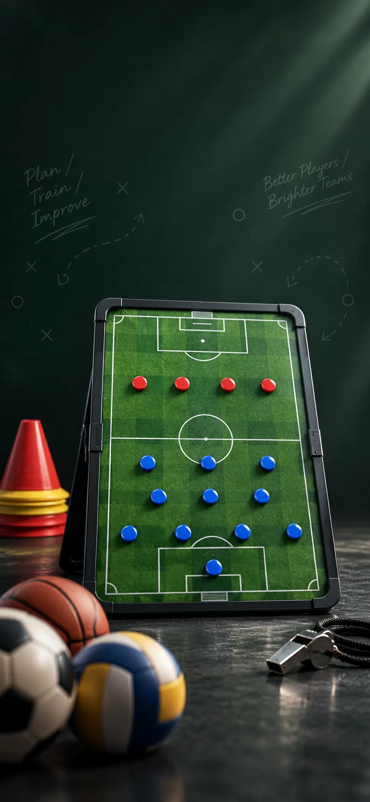
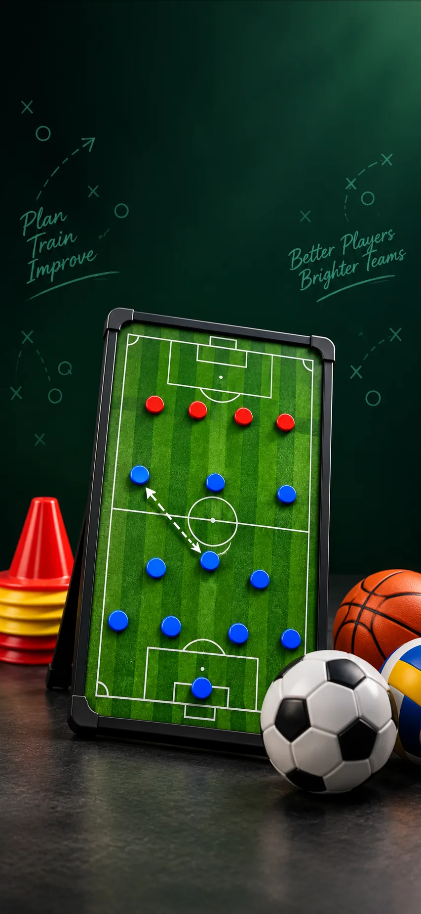
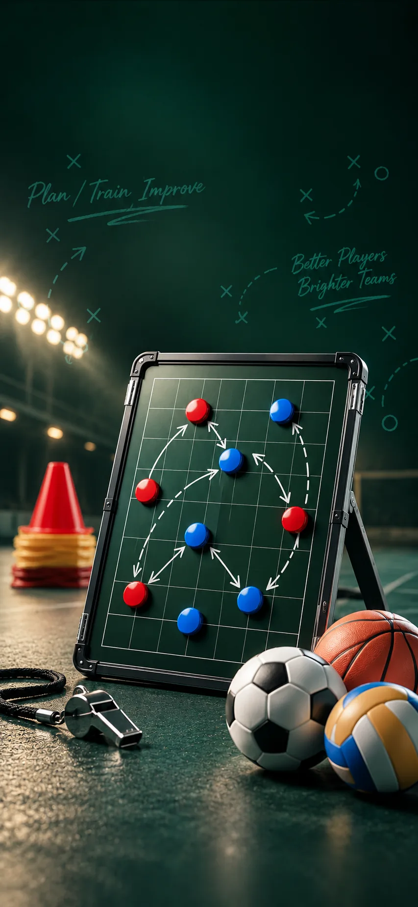
tactics_board_1.png 1080x2340 Premium 3D product render for a mobile app onboarding screen. Vertical 9:19.5 composition (1080x2340). A coach's magnetic tactics board is the subject — black rounded frame, folding hinged corners, slightly glossy surface — standing LEVEL on flat ground — its whole bottom edge resting on the floor, parallel to the floor, not tilted sideways, not floating and not sunk in — leaning back only slightly on its kickstand, turned at a gentle three-quarter angle, lit by one soft key light from the upper left with a cool rim light down its right edge. The board face is painted green football turf with faint mowing stripes — the real colour of that sport's playing surface, not a generic green chalkboard. On it: a full football pitch seen vertically — centre circle, both penalty areas and goal boxes, drawn in clean thin SOLID white lines — every court line solid, no dashed or dotted court markings — with glossy BLUE magnetic discs set out as a 4-3-3 in the near half (a goalkeeper in the goal box, a back four, three midfielders, three forwards) and four RED discs as a defensive line in the far half, and No other arrows. NO arrows, lines, arcs or trails of any kind on the board — only the magnets. Close, slightly low camera angle. The board is the clear hero, standing on its own kickstand and filling the middle of the frame. The ground is a dark slate table top. a football, a basketball and a volleyball grouped together rests on the ground in front of the board and to the left, close to camera and softly out of focus. a stack of red and yellow training cones sits behind the board on the left. a chrome coach’s whistle on a black lanyard lies on the ground to the right of the board. Soft diagonal light rays fall across the backdrop from the upper right. Even in this low light the board face stays clearly green football turf with faint mowing stripes, fully lit and readable — not a dark or black chalkboard. Colour: deep desaturated forest green throughout, falling to near-black in the corners, with a soft vignette. The only saturated colours in the frame are the red and blue magnetic discs, the props described above and the board face in its own court colour; everything else is muted green and charcoal. Mint-teal (#18C7BC) chalk doodles float faintly on the background — small hand-drawn X and O marks, curved dashed arrows, and two handwritten cursive lines reading "Plan / Train / Improve" and "Better Players / Brighter Teams" with an underline flourish, all in low-opacity mint chalk, clearly decorative and set back behind the objects. COMPOSITION RULE (most important): the top 40% of the frame must stay empty, dark and uncluttered — only the faint chalk doodles and the background gradient live up there. The board and every prop sit entirely in the lower 60% of the frame. Nothing crosses into the top edge. Render: cinematic shallow depth of field, subtle film grain, soft contact shadows, 3D render and product photography hybrid, ultra clean, high detail, no clutter. Do NOT include: any headline text, numbers, captions, UI elements, buttons, phone frames, device mockups, bezels, logos, watermarks, brand names, people or hands. The only text anywhere in the image is the decorative mint chalk handwriting described above.
tactics_board_2.png 1080x2340 Premium 3D product render for a mobile app onboarding screen. Vertical 9:19.5 composition (1080x2340). A coach's magnetic tactics board is the subject — black rounded frame, folding hinged corners, slightly glossy surface — standing LEVEL on flat ground — its whole bottom edge resting on the floor, parallel to the floor, not tilted sideways, not floating and not sunk in — leaning back only slightly on its kickstand, turned at a gentle three-quarter angle, lit by one soft key light from the upper left with a cool rim light down its right edge. The board face is painted green football turf with faint mowing stripes — the real colour of that sport's playing surface, not a generic green chalkboard. On it: a full football pitch seen vertically — centre circle, both penalty areas and goal boxes, drawn in clean thin SOLID white lines — every court line solid, no dashed or dotted court markings — with glossy BLUE magnetic discs set out as a 4-3-3 in the near half (a goalkeeper in the goal box, a back four, three midfielders, three forwards) and four RED discs as a defensive line in the far half, and No other arrows. NO arrows, lines, arcs or trails of any kind on the board — only the magnets. Studio composition. The ground is a dark slate table top, filling the lower part of the frame as a clean, evenly lit, flat floor with its own real colour and markings, with soft contact shadows under the objects. Above the floor the backdrop is a plain deep-green gradient. The board is centred and tilted back a little, seen slightly from above. a stack of red and yellow training cones sits at the left edge of the board, overlapping it. a football, a basketball and a volleyball grouped together rests at the lower right, just touching the board's corner. Graphic, clean and poster-like rather than photographic. Colour: deep desaturated forest green throughout, falling to near-black in the corners, with a soft vignette. The only saturated colours in the frame are the red and blue magnetic discs, the props described above and the board face in its own court colour; everything else is muted green and charcoal. Mint-teal (#18C7BC) chalk doodles float faintly on the background — small hand-drawn X and O marks, curved dashed arrows, and two handwritten cursive lines reading "Plan / Train / Improve" and "Better Players / Brighter Teams" with an underline flourish, all in low-opacity mint chalk, clearly decorative and set back behind the objects. COMPOSITION RULE (most important): the top 40% of the frame must stay empty, dark and uncluttered — only the faint chalk doodles and the background gradient live up there. The board and every prop sit entirely in the lower 60% of the frame. Nothing crosses into the top edge. Render: cinematic shallow depth of field, subtle film grain, soft contact shadows, 3D render and product photography hybrid, ultra clean, high detail, no clutter. Do NOT include: any headline text, numbers, captions, UI elements, buttons, phone frames, device mockups, bezels, logos, watermarks, brand names, people or hands. The only text anywhere in the image is the decorative mint chalk handwriting described above.
tactics_board_3.png 1080x2340 Premium 3D product render for a mobile app onboarding screen. Vertical 9:19.5 composition (1080x2340). A coach's magnetic tactics board is the subject — black rounded frame, folding hinged corners, slightly glossy surface — standing LEVEL on flat ground — its whole bottom edge resting on the floor, parallel to the floor, not tilted sideways, not floating and not sunk in — leaning back only slightly on its kickstand, turned at a gentle three-quarter angle, lit by one soft key light from the upper left with a cool rim light down its right edge. The board face is painted green football turf with faint mowing stripes — the real colour of that sport's playing surface, not a generic green chalkboard. On it: a full football pitch seen vertically — centre circle, both penalty areas and goal boxes, drawn in clean thin SOLID white lines — every court line solid, no dashed or dotted court markings — with glossy BLUE magnetic discs set out as a 4-3-3 in the near half (a goalkeeper in the goal box, a back four, three midfielders, three forwards) and four RED discs as a defensive line in the far half, and No other arrows. NO arrows, lines, arcs or trails of any kind on the board — only the magnets. Wide environmental shot taken on the playing surface itself, from a low sideline angle. a dark slate table top fills the lower frame, sharp near the camera and softening into darkness toward the back. A row of stadium floodlights glows far out of focus in the upper left corner as small warm bokeh. The board stands centre-frame on the ground. a chrome coach’s whistle on a black lanyard lies at the lower left. a football, a basketball and a volleyball grouped together rests at the lower right. a stack of red and yellow training cones sits further back on the left. Colour: deep desaturated forest green throughout, falling to near-black in the corners, with a soft vignette. The only saturated colours in the frame are the red and blue magnetic discs, the props described above and the board face in its own court colour; everything else is muted green and charcoal. Mint-teal (#18C7BC) chalk doodles float faintly on the background — small hand-drawn X and O marks, curved dashed arrows, and two handwritten cursive lines reading "Plan / Train / Improve" and "Better Players / Brighter Teams" with an underline flourish, all in low-opacity mint chalk, clearly decorative and set back behind the objects. COMPOSITION RULE (most important): the top 40% of the frame must stay empty, dark and uncluttered — only the faint chalk doodles and the background gradient live up there. The board and every prop sit entirely in the lower 60% of the frame. Nothing crosses into the top edge. Render: cinematic shallow depth of field, subtle film grain, soft contact shadows, 3D render and product photography hybrid, ultra clean, high detail, no clutter. Do NOT include: any headline text, numbers, captions, UI elements, buttons, phone frames, device mockups, bezels, logos, watermarks, brand names, people or hands. The only text anywhere in the image is the decorative mint chalk handwriting described above.
足球战术板 soccer · SoccerBoard/assets/intro/
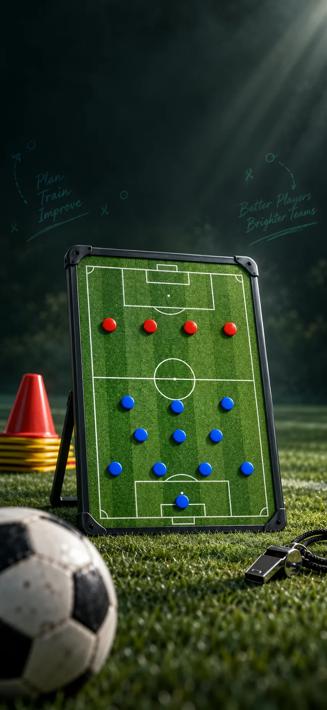
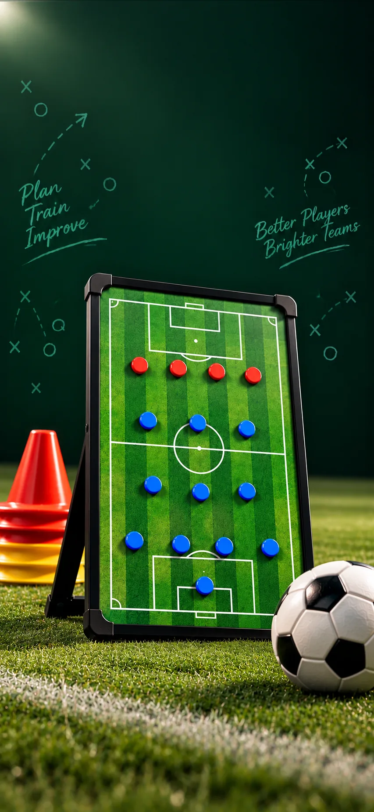
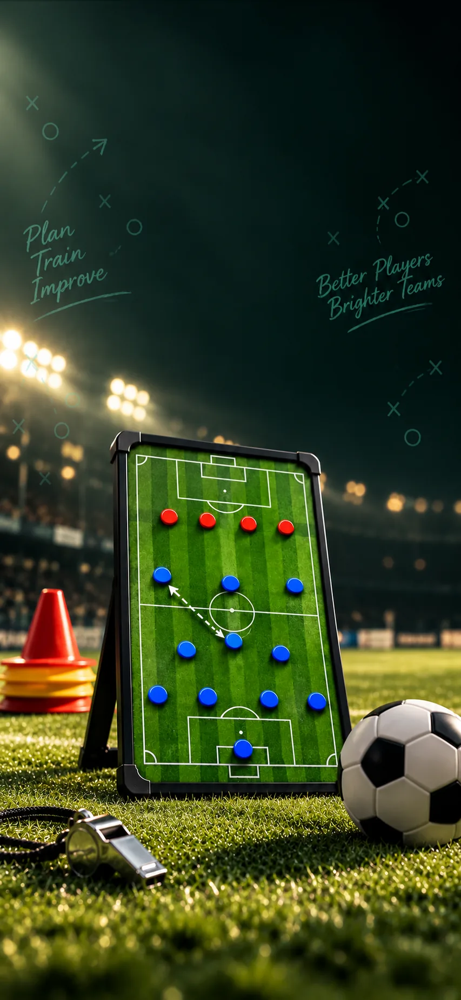
soccer_1.png 1080x2340 Premium 3D product render for a mobile app onboarding screen. Vertical 9:19.5 composition (1080x2340). A coach's magnetic tactics board is the subject — black rounded frame, folding hinged corners, slightly glossy surface — standing LEVEL on flat ground — its whole bottom edge resting on the floor, parallel to the floor, not tilted sideways, not floating and not sunk in — leaning back only slightly on its kickstand, turned at a gentle three-quarter angle, lit by one soft key light from the upper left with a cool rim light down its right edge. The board face is painted green football turf with faint mowing stripes — the real colour of that sport's playing surface, not a generic green chalkboard. On it: a full football pitch seen vertically, with the centre circle, both penalty areas and goal boxes, drawn in clean thin SOLID white lines — every court line solid, no dashed or dotted court markings — with glossy BLUE magnetic discs set out as a 4-3-3 in the near half (a goalkeeper in the goal box, a back four, three midfielders, three forwards) and four RED discs as a defensive line in the far half. NO arrows, lines, arcs or trails of any kind on the board — only the magnets. Close, slightly low camera angle. The board is the clear hero, standing on its own kickstand and filling the middle of the frame. The ground is mown green grass turf with faint mowing stripes. a classic black-and-white size-5 football rests on the ground in front of the board and to the left, close to camera and softly out of focus. a stack of red and yellow training cones sits behind the board on the left. a chrome coach’s whistle on a black lanyard lies on the ground to the right of the board. Soft diagonal light rays fall across the backdrop from the upper right. Even in this low light the board face stays clearly green football turf with faint mowing stripes, fully lit and readable — not a dark or black chalkboard. Colour: deep desaturated forest green throughout, falling to near-black in the corners, with a soft vignette. The only saturated colours in the frame are the red and blue magnetic discs, the props described above and the board face in its own court colour; everything else is muted green and charcoal. Mint-teal (#18C7BC) chalk doodles float faintly on the background — small hand-drawn X and O marks, curved dashed arrows, and two handwritten cursive lines reading "Plan / Train / Improve" and "Better Players / Brighter Teams" with an underline flourish, all in low-opacity mint chalk, clearly decorative and set back behind the objects. COMPOSITION RULE (most important): the top 40% of the frame must stay empty, dark and uncluttered — only the faint chalk doodles and the background gradient live up there. The board and every prop sit entirely in the lower 60% of the frame. Nothing crosses into the top edge. Render: cinematic shallow depth of field, subtle film grain, soft contact shadows, 3D render and product photography hybrid, ultra clean, high detail, no clutter. Do NOT include: any headline text, numbers, captions, UI elements, buttons, phone frames, device mockups, bezels, logos, watermarks, brand names, people or hands. The only text anywhere in the image is the decorative mint chalk handwriting described above.
soccer_2.png 1080x2340 Premium 3D product render for a mobile app onboarding screen. Vertical 9:19.5 composition (1080x2340). A coach's magnetic tactics board is the subject — black rounded frame, folding hinged corners, slightly glossy surface — standing LEVEL on flat ground — its whole bottom edge resting on the floor, parallel to the floor, not tilted sideways, not floating and not sunk in — leaning back only slightly on its kickstand, turned at a gentle three-quarter angle, lit by one soft key light from the upper left with a cool rim light down its right edge. The board face is painted green football turf with faint mowing stripes — the real colour of that sport's playing surface, not a generic green chalkboard. On it: a full football pitch seen vertically, with the centre circle, both penalty areas and goal boxes, drawn in clean thin SOLID white lines — every court line solid, no dashed or dotted court markings — with glossy BLUE magnetic discs set out as a 4-3-3 in the near half (a goalkeeper in the goal box, a back four, three midfielders, three forwards) and four RED discs as a defensive line in the far half. NO arrows, lines, arcs or trails of any kind on the board — only the magnets. Studio composition. The ground is mown green grass turf with faint mowing stripes, filling the lower part of the frame as a clean, evenly lit, flat floor with its own real colour and markings, with soft contact shadows under the objects. Above the floor the backdrop is a plain deep-green gradient. The board is centred and tilted back a little, seen slightly from above. a stack of red and yellow training cones sits at the left edge of the board, overlapping it. a classic black-and-white size-5 football rests at the lower right, just touching the board's corner. Graphic, clean and poster-like rather than photographic. Colour: deep desaturated forest green throughout, falling to near-black in the corners, with a soft vignette. The only saturated colours in the frame are the red and blue magnetic discs, the props described above and the board face in its own court colour; everything else is muted green and charcoal. Mint-teal (#18C7BC) chalk doodles float faintly on the background — small hand-drawn X and O marks, curved dashed arrows, and two handwritten cursive lines reading "Plan / Train / Improve" and "Better Players / Brighter Teams" with an underline flourish, all in low-opacity mint chalk, clearly decorative and set back behind the objects. COMPOSITION RULE (most important): the top 40% of the frame must stay empty, dark and uncluttered — only the faint chalk doodles and the background gradient live up there. The board and every prop sit entirely in the lower 60% of the frame. Nothing crosses into the top edge. Render: cinematic shallow depth of field, subtle film grain, soft contact shadows, 3D render and product photography hybrid, ultra clean, high detail, no clutter. Do NOT include: any headline text, numbers, captions, UI elements, buttons, phone frames, device mockups, bezels, logos, watermarks, brand names, people or hands. The only text anywhere in the image is the decorative mint chalk handwriting described above.
soccer_3.png 1080x2340 Premium 3D product render for a mobile app onboarding screen. Vertical 9:19.5 composition (1080x2340). A coach's magnetic tactics board is the subject — black rounded frame, folding hinged corners, slightly glossy surface — standing LEVEL on flat ground — its whole bottom edge resting on the floor, parallel to the floor, not tilted sideways, not floating and not sunk in — leaning back only slightly on its kickstand, turned at a gentle three-quarter angle, lit by one soft key light from the upper left with a cool rim light down its right edge. The board face is painted green football turf with faint mowing stripes — the real colour of that sport's playing surface, not a generic green chalkboard. On it: a full football pitch seen vertically, with the centre circle, both penalty areas and goal boxes, drawn in clean thin SOLID white lines — every court line solid, no dashed or dotted court markings — with glossy BLUE magnetic discs set out as a 4-3-3 in the near half (a goalkeeper in the goal box, a back four, three midfielders, three forwards) and four RED discs as a defensive line in the far half. NO arrows, lines, arcs or trails of any kind on the board — only the magnets. Wide environmental shot taken on the playing surface itself, from a low sideline angle. mown green grass turf with faint mowing stripes fills the lower frame, sharp near the camera and softening into darkness toward the back. A row of stadium floodlights glows far out of focus in the upper left corner as small warm bokeh. The board stands centre-frame on the ground. a chrome coach’s whistle on a black lanyard lies at the lower left. a classic black-and-white size-5 football rests at the lower right. a stack of red and yellow training cones sits further back on the left. Colour: deep desaturated forest green throughout, falling to near-black in the corners, with a soft vignette. The only saturated colours in the frame are the red and blue magnetic discs, the props described above and the board face in its own court colour; everything else is muted green and charcoal. Mint-teal (#18C7BC) chalk doodles float faintly on the background — small hand-drawn X and O marks, curved dashed arrows, and two handwritten cursive lines reading "Plan / Train / Improve" and "Better Players / Brighter Teams" with an underline flourish, all in low-opacity mint chalk, clearly decorative and set back behind the objects. COMPOSITION RULE (most important): the top 40% of the frame must stay empty, dark and uncluttered — only the faint chalk doodles and the background gradient live up there. The board and every prop sit entirely in the lower 60% of the frame. Nothing crosses into the top edge. Render: cinematic shallow depth of field, subtle film grain, soft contact shadows, 3D render and product photography hybrid, ultra clean, high detail, no clutter. Do NOT include: any headline text, numbers, captions, UI elements, buttons, phone frames, device mockups, bezels, logos, watermarks, brand names, people or hands. The only text anywhere in the image is the decorative mint chalk handwriting described above.
篮球战术板 basketball · BasketballBoard/assets/intro/
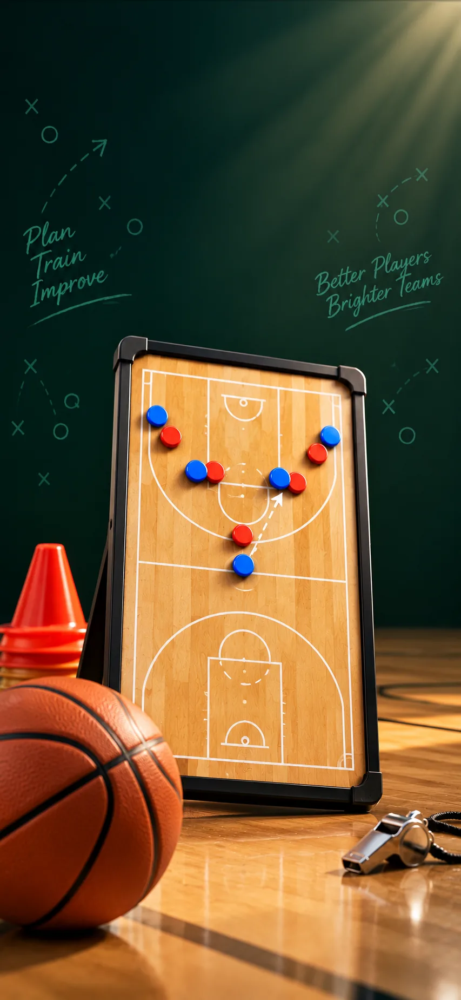
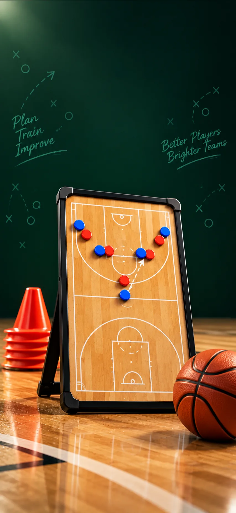
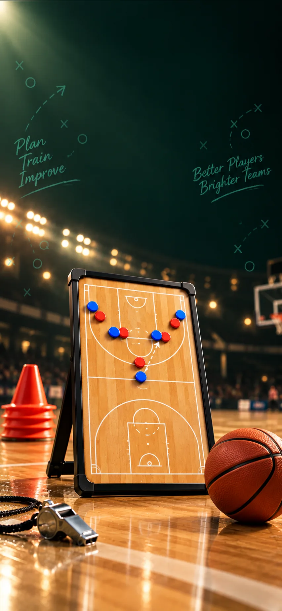
basketball_1.png 1080x2340 Premium 3D product render for a mobile app onboarding screen. Vertical 9:19.5 composition (1080x2340). A coach's magnetic tactics board is the subject — black rounded frame, folding hinged corners, slightly glossy surface — standing LEVEL on flat ground — its whole bottom edge resting on the floor, parallel to the floor, not tilted sideways, not floating and not sunk in — leaning back only slightly on its kickstand, turned at a gentle three-quarter angle, lit by one soft key light from the upper left with a cool rim light down its right edge. The board face is painted light maple hardwood — the real colour of that sport's playing surface, not a generic green chalkboard. On it: a full basketball court seen vertically, with the centre circle, both keys and the three-point arcs, drawn in clean thin SOLID white lines — every court line solid, no dashed or dotted court markings — with five BLUE magnetic discs in the far half-court in an offensive set — the point guard at the top of the three-point arc, two players at the elbows of the key, two in the corners — and five RED discs each guarding one of them. NO arrows, lines, arcs or trails of any kind on the board — only the magnets. Close, slightly low camera angle. The board is the clear hero, standing on its own kickstand and filling the middle of the frame. The ground is polished light hardwood flooring with long reflected highlights. an orange pebbled basketball rests on the ground in front of the board and to the left, close to camera and softly out of focus. a stack of orange training cones sits behind the board on the left. a chrome coach’s whistle on a black lanyard lies on the ground to the right of the board. Soft diagonal light rays fall across the backdrop from the upper right. Even in this low light the board face stays clearly light maple hardwood, fully lit and readable — not a dark or black chalkboard. Colour: deep desaturated forest green throughout, falling to near-black in the corners, with a soft vignette. The only saturated colours in the frame are the red and blue magnetic discs, the props described above and the board face in its own court colour; everything else is muted green and charcoal. Mint-teal (#18C7BC) chalk doodles float faintly on the background — small hand-drawn X and O marks, curved dashed arrows, and two handwritten cursive lines reading "Plan / Train / Improve" and "Better Players / Brighter Teams" with an underline flourish, all in low-opacity mint chalk, clearly decorative and set back behind the objects. COMPOSITION RULE (most important): the top 40% of the frame must stay empty, dark and uncluttered — only the faint chalk doodles and the background gradient live up there. The board and every prop sit entirely in the lower 60% of the frame. Nothing crosses into the top edge. Render: cinematic shallow depth of field, subtle film grain, soft contact shadows, 3D render and product photography hybrid, ultra clean, high detail, no clutter. Do NOT include: any headline text, numbers, captions, UI elements, buttons, phone frames, device mockups, bezels, logos, watermarks, brand names, people or hands. The only text anywhere in the image is the decorative mint chalk handwriting described above.
basketball_2.png 1080x2340 Premium 3D product render for a mobile app onboarding screen. Vertical 9:19.5 composition (1080x2340). A coach's magnetic tactics board is the subject — black rounded frame, folding hinged corners, slightly glossy surface — standing LEVEL on flat ground — its whole bottom edge resting on the floor, parallel to the floor, not tilted sideways, not floating and not sunk in — leaning back only slightly on its kickstand, turned at a gentle three-quarter angle, lit by one soft key light from the upper left with a cool rim light down its right edge. The board face is painted light maple hardwood — the real colour of that sport's playing surface, not a generic green chalkboard. On it: a full basketball court seen vertically, with the centre circle, both keys and the three-point arcs, drawn in clean thin SOLID white lines — every court line solid, no dashed or dotted court markings — with five BLUE magnetic discs in the far half-court in an offensive set — the point guard at the top of the three-point arc, two players at the elbows of the key, two in the corners — and five RED discs each guarding one of them. NO arrows, lines, arcs or trails of any kind on the board — only the magnets. Studio composition. The ground is polished light hardwood flooring with long reflected highlights, filling the lower part of the frame as a clean, evenly lit, flat floor with its own real colour and markings, with soft contact shadows under the objects. Above the floor the backdrop is a plain deep-green gradient. The board is centred and tilted back a little, seen slightly from above. a stack of orange training cones sits at the left edge of the board, overlapping it. an orange pebbled basketball rests at the lower right, just touching the board's corner. Graphic, clean and poster-like rather than photographic. Colour: deep desaturated forest green throughout, falling to near-black in the corners, with a soft vignette. The only saturated colours in the frame are the red and blue magnetic discs, the props described above and the board face in its own court colour; everything else is muted green and charcoal. Mint-teal (#18C7BC) chalk doodles float faintly on the background — small hand-drawn X and O marks, curved dashed arrows, and two handwritten cursive lines reading "Plan / Train / Improve" and "Better Players / Brighter Teams" with an underline flourish, all in low-opacity mint chalk, clearly decorative and set back behind the objects. COMPOSITION RULE (most important): the top 40% of the frame must stay empty, dark and uncluttered — only the faint chalk doodles and the background gradient live up there. The board and every prop sit entirely in the lower 60% of the frame. Nothing crosses into the top edge. Render: cinematic shallow depth of field, subtle film grain, soft contact shadows, 3D render and product photography hybrid, ultra clean, high detail, no clutter. Do NOT include: any headline text, numbers, captions, UI elements, buttons, phone frames, device mockups, bezels, logos, watermarks, brand names, people or hands. The only text anywhere in the image is the decorative mint chalk handwriting described above.
basketball_3.png 1080x2340 Premium 3D product render for a mobile app onboarding screen. Vertical 9:19.5 composition (1080x2340). A coach's magnetic tactics board is the subject — black rounded frame, folding hinged corners, slightly glossy surface — standing LEVEL on flat ground — its whole bottom edge resting on the floor, parallel to the floor, not tilted sideways, not floating and not sunk in — leaning back only slightly on its kickstand, turned at a gentle three-quarter angle, lit by one soft key light from the upper left with a cool rim light down its right edge. The board face is painted light maple hardwood — the real colour of that sport's playing surface, not a generic green chalkboard. On it: a full basketball court seen vertically, with the centre circle, both keys and the three-point arcs, drawn in clean thin SOLID white lines — every court line solid, no dashed or dotted court markings — with five BLUE magnetic discs in the far half-court in an offensive set — the point guard at the top of the three-point arc, two players at the elbows of the key, two in the corners — and five RED discs each guarding one of them. NO arrows, lines, arcs or trails of any kind on the board — only the magnets. Wide environmental shot taken on the playing surface itself, from a low sideline angle. polished light hardwood flooring with long reflected highlights fills the lower frame, sharp near the camera and softening into darkness toward the back. A row of stadium floodlights glows far out of focus in the upper left corner as small warm bokeh. The board stands centre-frame on the ground. a chrome coach’s whistle on a black lanyard lies at the lower left. an orange pebbled basketball rests at the lower right. a stack of orange training cones sits further back on the left. Colour: deep desaturated forest green throughout, falling to near-black in the corners, with a soft vignette. The only saturated colours in the frame are the red and blue magnetic discs, the props described above and the board face in its own court colour; everything else is muted green and charcoal. Mint-teal (#18C7BC) chalk doodles float faintly on the background — small hand-drawn X and O marks, curved dashed arrows, and two handwritten cursive lines reading "Plan / Train / Improve" and "Better Players / Brighter Teams" with an underline flourish, all in low-opacity mint chalk, clearly decorative and set back behind the objects. COMPOSITION RULE (most important): the top 40% of the frame must stay empty, dark and uncluttered — only the faint chalk doodles and the background gradient live up there. The board and every prop sit entirely in the lower 60% of the frame. Nothing crosses into the top edge. Render: cinematic shallow depth of field, subtle film grain, soft contact shadows, 3D render and product photography hybrid, ultra clean, high detail, no clutter. Do NOT include: any headline text, numbers, captions, UI elements, buttons, phone frames, device mockups, bezels, logos, watermarks, brand names, people or hands. The only text anywhere in the image is the decorative mint chalk handwriting described above.
排球战术板 volleyball · VolleyballBoard/assets/intro/
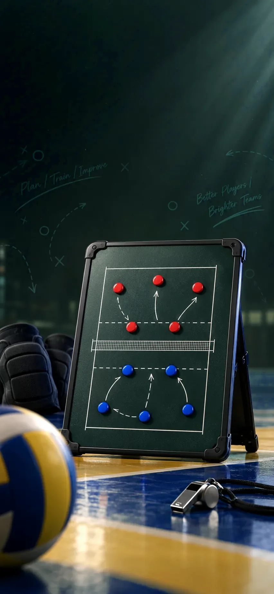
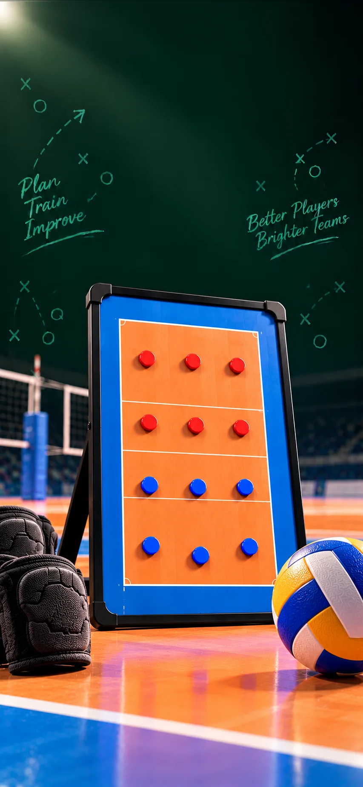
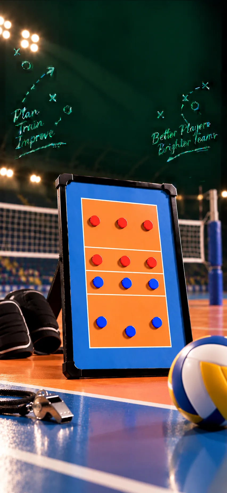
volleyball_1.png 1080x2340 Premium 3D product render for a mobile app onboarding screen. Vertical 9:19.5 composition (1080x2340). A coach's magnetic tactics board is the subject — black rounded frame, folding hinged corners, slightly glossy surface — standing LEVEL on flat ground — its whole bottom edge resting on the floor, parallel to the floor, not tilted sideways, not floating and not sunk in — leaning back only slightly on its kickstand, turned at a gentle three-quarter angle, lit by one soft key light from the upper left with a cool rim light down its right edge. The board face is painted a warm ORANGE playing court inside the white lines with a ROYAL BLUE free zone around it — the same colours the app draws (never green, teal or grey) — the real colour of that sport's playing surface, not a generic green chalkboard. On it: a volleyball court seen vertically, with the centre net line and both attack lines, drawn in clean thin SOLID white lines — every court line solid, no dashed or dotted court markings — with six BLUE magnetic discs in the near court in a serve-receive shape — three along the net, three in a W across the back — and six RED discs in the far court, three at the net and three deep. NO arrows, lines, arcs or trails of any kind on the board — only the magnets. Close, slightly low camera angle. The board is the clear hero, standing on its own kickstand and filling the middle of the frame. The ground is a glossy indoor volleyball floor in the standard competition colours — a warm ORANGE playing court inside crisp white lines with a ROYAL BLUE free zone around it. This floor is the one exception to the muted-green palette: its orange must read as a clean warm orange and its blue as a clean saturated blue, never teal, cyan, green or grey. a white, blue and yellow volleyball rests on the ground in front of the board and to the left, close to camera and softly out of focus. a pair of black knee pads sits behind the board on the left. a chrome coach’s whistle on a black lanyard lies on the ground to the right of the board. Soft diagonal light rays fall across the backdrop from the upper right. Even in this low light the board face stays clearly a warm ORANGE playing court inside the white lines with a ROYAL BLUE free zone around it — the same colours the app draws (never green, teal or grey), fully lit and readable — not a dark or black chalkboard. Colour: deep desaturated forest green throughout, falling to near-black in the corners, with a soft vignette. The only saturated colours in the frame are the red and blue magnetic discs, the props described above and the board face in its own court colour; everything else is muted green and charcoal. Mint-teal (#18C7BC) chalk doodles float faintly on the background — small hand-drawn X and O marks, curved dashed arrows, and two handwritten cursive lines reading "Plan / Train / Improve" and "Better Players / Brighter Teams" with an underline flourish, all in low-opacity mint chalk, clearly decorative and set back behind the objects. COMPOSITION RULE (most important): the top 40% of the frame must stay empty, dark and uncluttered — only the faint chalk doodles and the background gradient live up there. The board and every prop sit entirely in the lower 60% of the frame. Nothing crosses into the top edge. Render: cinematic shallow depth of field, subtle film grain, soft contact shadows, 3D render and product photography hybrid, ultra clean, high detail, no clutter. Do NOT include: any headline text, numbers, captions, UI elements, buttons, phone frames, device mockups, bezels, logos, watermarks, brand names, people or hands. The only text anywhere in the image is the decorative mint chalk handwriting described above.
volleyball_2.png 1080x2340 Premium 3D product render for a mobile app onboarding screen. Vertical 9:19.5 composition (1080x2340). A coach's magnetic tactics board is the subject — black rounded frame, folding hinged corners, slightly glossy surface — standing LEVEL on flat ground — its whole bottom edge resting on the floor, parallel to the floor, not tilted sideways, not floating and not sunk in — leaning back only slightly on its kickstand, turned at a gentle three-quarter angle, lit by one soft key light from the upper left with a cool rim light down its right edge. The board face is painted a warm ORANGE playing court inside the white lines with a ROYAL BLUE free zone around it — the same colours the app draws (never green, teal or grey) — the real colour of that sport's playing surface, not a generic green chalkboard. On it: a volleyball court seen vertically, with the centre net line and both attack lines, drawn in clean thin SOLID white lines — every court line solid, no dashed or dotted court markings — with six BLUE magnetic discs in the near court in a serve-receive shape — three along the net, three in a W across the back — and six RED discs in the far court, three at the net and three deep. NO arrows, lines, arcs or trails of any kind on the board — only the magnets. Studio composition. The ground is a glossy indoor volleyball floor in the standard competition colours — a warm ORANGE playing court inside crisp white lines with a ROYAL BLUE free zone around it. This floor is the one exception to the muted-green palette: its orange must read as a clean warm orange and its blue as a clean saturated blue, never teal, cyan, green or grey, filling the lower part of the frame as a clean, evenly lit, flat floor with its own real colour and markings, with soft contact shadows under the objects. Above the floor the backdrop is a plain deep-green gradient. The board is centred and tilted back a little, seen slightly from above. a pair of black knee pads sits at the left edge of the board, overlapping it. a white, blue and yellow volleyball rests at the lower right, just touching the board's corner. Graphic, clean and poster-like rather than photographic. Colour: deep desaturated forest green throughout, falling to near-black in the corners, with a soft vignette. The only saturated colours in the frame are the red and blue magnetic discs, the props described above and the board face in its own court colour; everything else is muted green and charcoal. Mint-teal (#18C7BC) chalk doodles float faintly on the background — small hand-drawn X and O marks, curved dashed arrows, and two handwritten cursive lines reading "Plan / Train / Improve" and "Better Players / Brighter Teams" with an underline flourish, all in low-opacity mint chalk, clearly decorative and set back behind the objects. COMPOSITION RULE (most important): the top 40% of the frame must stay empty, dark and uncluttered — only the faint chalk doodles and the background gradient live up there. The board and every prop sit entirely in the lower 60% of the frame. Nothing crosses into the top edge. Render: cinematic shallow depth of field, subtle film grain, soft contact shadows, 3D render and product photography hybrid, ultra clean, high detail, no clutter. Do NOT include: any headline text, numbers, captions, UI elements, buttons, phone frames, device mockups, bezels, logos, watermarks, brand names, people or hands. The only text anywhere in the image is the decorative mint chalk handwriting described above.
volleyball_3.png 1080x2340 Premium 3D product render for a mobile app onboarding screen. Vertical 9:19.5 composition (1080x2340). A coach's magnetic tactics board is the subject — black rounded frame, folding hinged corners, slightly glossy surface — standing LEVEL on flat ground — its whole bottom edge resting on the floor, parallel to the floor, not tilted sideways, not floating and not sunk in — leaning back only slightly on its kickstand, turned at a gentle three-quarter angle, lit by one soft key light from the upper left with a cool rim light down its right edge. The board face is painted a warm ORANGE playing court inside the white lines with a ROYAL BLUE free zone around it — the same colours the app draws (never green, teal or grey) — the real colour of that sport's playing surface, not a generic green chalkboard. On it: a volleyball court seen vertically, with the centre net line and both attack lines, drawn in clean thin SOLID white lines — every court line solid, no dashed or dotted court markings — with six BLUE magnetic discs in the near court in a serve-receive shape — three along the net, three in a W across the back — and six RED discs in the far court, three at the net and three deep. NO arrows, lines, arcs or trails of any kind on the board — only the magnets. Wide environmental shot taken on the playing surface itself, from a low sideline angle. a glossy indoor volleyball floor in the standard competition colours — a warm ORANGE playing court inside crisp white lines with a ROYAL BLUE free zone around it. This floor is the one exception to the muted-green palette: its orange must read as a clean warm orange and its blue as a clean saturated blue, never teal, cyan, green or grey fills the lower frame, sharp near the camera and softening into darkness toward the back. A row of stadium floodlights glows far out of focus in the upper left corner as small warm bokeh. The board stands centre-frame on the ground. a chrome coach’s whistle on a black lanyard lies at the lower left. a white, blue and yellow volleyball rests at the lower right. a pair of black knee pads sits further back on the left. Colour: deep desaturated forest green throughout, falling to near-black in the corners, with a soft vignette. The only saturated colours in the frame are the red and blue magnetic discs, the props described above and the board face in its own court colour; everything else is muted green and charcoal. Mint-teal (#18C7BC) chalk doodles float faintly on the background — small hand-drawn X and O marks, curved dashed arrows, and two handwritten cursive lines reading "Plan / Train / Improve" and "Better Players / Brighter Teams" with an underline flourish, all in low-opacity mint chalk, clearly decorative and set back behind the objects. COMPOSITION RULE (most important): the top 40% of the frame must stay empty, dark and uncluttered — only the faint chalk doodles and the background gradient live up there. The board and every prop sit entirely in the lower 60% of the frame. Nothing crosses into the top edge. Render: cinematic shallow depth of field, subtle film grain, soft contact shadows, 3D render and product photography hybrid, ultra clean, high detail, no clutter. Do NOT include: any headline text, numbers, captions, UI elements, buttons, phone frames, device mockups, bezels, logos, watermarks, brand names, people or hands. The only text anywhere in the image is the decorative mint chalk handwriting described above.
羽毛球战术板 badminton · BadmintonBoard/assets/intro/
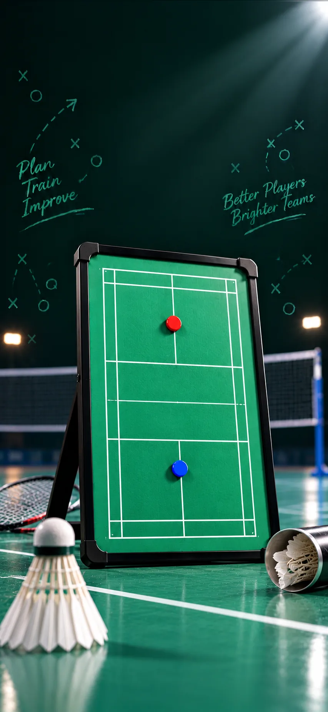
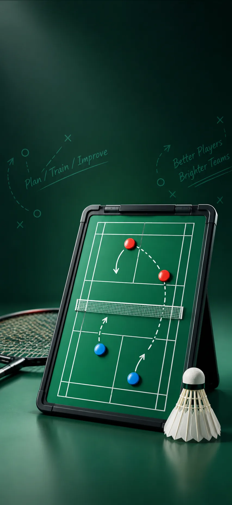
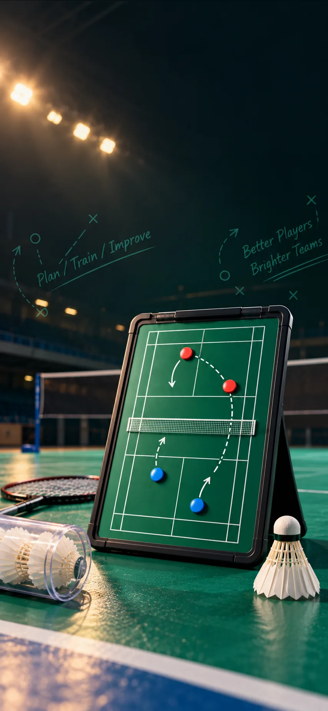
badminton_1.png 1080x2340 Premium 3D product render for a mobile app onboarding screen. Vertical 9:19.5 composition (1080x2340). A coach's magnetic tactics board is the subject — black rounded frame, folding hinged corners, slightly glossy surface — standing LEVEL on flat ground — its whole bottom edge resting on the floor, parallel to the floor, not tilted sideways, not floating and not sunk in — leaning back only slightly on its kickstand, turned at a gentle three-quarter angle, lit by one soft key light from the upper left with a cool rim light down its right edge. The board face is painted green synthetic badminton mat — the real colour of that sport's playing surface, not a generic green chalkboard. On it: a badminton doubles court seen vertically, with the short service lines, the net line and the tramlines, drawn in clean thin SOLID white lines — every court line solid, no dashed or dotted court markings — with EXACTLY two glossy magnetic discs: one BLUE disc in the centre of the near court just behind its short service line (the base position), and one RED disc in the same spot in the far court. NO arrows, lines, arcs or trails of any kind on the board — only the magnets. Close, slightly low camera angle. The board is the clear hero, standing on its own kickstand and filling the middle of the frame. The ground is a green and blue synthetic badminton mat. a white feather shuttlecock standing upright on its cork rests on the ground in front of the board and to the left, close to camera and softly out of focus. a badminton racket lying flat sits behind the board on the left. an open tube of shuttlecocks lies on the ground to the right of the board. Soft diagonal light rays fall across the backdrop from the upper right. Even in this low light the board face stays clearly green synthetic badminton mat, fully lit and readable — not a dark or black chalkboard. Colour: deep desaturated forest green throughout, falling to near-black in the corners, with a soft vignette. The only saturated colours in the frame are the red and blue magnetic discs, the props described above and the board face in its own court colour; everything else is muted green and charcoal. Mint-teal (#18C7BC) chalk doodles float faintly on the background — small hand-drawn X and O marks, curved dashed arrows, and two handwritten cursive lines reading "Plan / Train / Improve" and "Better Players / Brighter Teams" with an underline flourish, all in low-opacity mint chalk, clearly decorative and set back behind the objects. COMPOSITION RULE (most important): the top 40% of the frame must stay empty, dark and uncluttered — only the faint chalk doodles and the background gradient live up there. The board and every prop sit entirely in the lower 60% of the frame. Nothing crosses into the top edge. Render: cinematic shallow depth of field, subtle film grain, soft contact shadows, 3D render and product photography hybrid, ultra clean, high detail, no clutter. Do NOT include: any headline text, numbers, captions, UI elements, buttons, phone frames, device mockups, bezels, logos, watermarks, brand names, people or hands. The only text anywhere in the image is the decorative mint chalk handwriting described above.
badminton_2.png 1080x2340 Premium 3D product render for a mobile app onboarding screen. Vertical 9:19.5 composition (1080x2340). A coach's magnetic tactics board is the subject — black rounded frame, folding hinged corners, slightly glossy surface — standing LEVEL on flat ground — its whole bottom edge resting on the floor, parallel to the floor, not tilted sideways, not floating and not sunk in — leaning back only slightly on its kickstand, turned at a gentle three-quarter angle, lit by one soft key light from the upper left with a cool rim light down its right edge. The board face is painted green synthetic badminton mat — the real colour of that sport's playing surface, not a generic green chalkboard. On it: a badminton doubles court seen vertically, with the short service lines, the net line and the tramlines, drawn in clean thin SOLID white lines — every court line solid, no dashed or dotted court markings — with EXACTLY two glossy magnetic discs: one BLUE disc in the centre of the near court just behind its short service line (the base position), and one RED disc in the same spot in the far court. NO arrows, lines, arcs or trails of any kind on the board — only the magnets. Studio composition. The ground is a green and blue synthetic badminton mat, filling the lower part of the frame as a clean, evenly lit, flat floor with its own real colour and markings, with soft contact shadows under the objects. Above the floor the backdrop is a plain deep-green gradient. The board is centred and tilted back a little, seen slightly from above. a badminton racket lying flat sits at the left edge of the board, overlapping it. a white feather shuttlecock standing upright on its cork rests at the lower right, just touching the board's corner. Graphic, clean and poster-like rather than photographic. Colour: deep desaturated forest green throughout, falling to near-black in the corners, with a soft vignette. The only saturated colours in the frame are the red and blue magnetic discs, the props described above and the board face in its own court colour; everything else is muted green and charcoal. Mint-teal (#18C7BC) chalk doodles float faintly on the background — small hand-drawn X and O marks, curved dashed arrows, and two handwritten cursive lines reading "Plan / Train / Improve" and "Better Players / Brighter Teams" with an underline flourish, all in low-opacity mint chalk, clearly decorative and set back behind the objects. COMPOSITION RULE (most important): the top 40% of the frame must stay empty, dark and uncluttered — only the faint chalk doodles and the background gradient live up there. The board and every prop sit entirely in the lower 60% of the frame. Nothing crosses into the top edge. Render: cinematic shallow depth of field, subtle film grain, soft contact shadows, 3D render and product photography hybrid, ultra clean, high detail, no clutter. Do NOT include: any headline text, numbers, captions, UI elements, buttons, phone frames, device mockups, bezels, logos, watermarks, brand names, people or hands. The only text anywhere in the image is the decorative mint chalk handwriting described above.
badminton_3.png 1080x2340 Premium 3D product render for a mobile app onboarding screen. Vertical 9:19.5 composition (1080x2340). A coach's magnetic tactics board is the subject — black rounded frame, folding hinged corners, slightly glossy surface — standing LEVEL on flat ground — its whole bottom edge resting on the floor, parallel to the floor, not tilted sideways, not floating and not sunk in — leaning back only slightly on its kickstand, turned at a gentle three-quarter angle, lit by one soft key light from the upper left with a cool rim light down its right edge. The board face is painted green synthetic badminton mat — the real colour of that sport's playing surface, not a generic green chalkboard. On it: a badminton doubles court seen vertically, with the short service lines, the net line and the tramlines, drawn in clean thin SOLID white lines — every court line solid, no dashed or dotted court markings — with EXACTLY two glossy magnetic discs: one BLUE disc in the centre of the near court just behind its short service line (the base position), and one RED disc in the same spot in the far court. NO arrows, lines, arcs or trails of any kind on the board — only the magnets. Wide environmental shot taken on the playing surface itself, from a low sideline angle. a green and blue synthetic badminton mat fills the lower frame, sharp near the camera and softening into darkness toward the back. A row of stadium floodlights glows far out of focus in the upper left corner as small warm bokeh. The board stands centre-frame on the ground. an open tube of shuttlecocks lies at the lower left. a white feather shuttlecock standing upright on its cork rests at the lower right. a badminton racket lying flat sits further back on the left. Colour: deep desaturated forest green throughout, falling to near-black in the corners, with a soft vignette. The only saturated colours in the frame are the red and blue magnetic discs, the props described above and the board face in its own court colour; everything else is muted green and charcoal. Mint-teal (#18C7BC) chalk doodles float faintly on the background — small hand-drawn X and O marks, curved dashed arrows, and two handwritten cursive lines reading "Plan / Train / Improve" and "Better Players / Brighter Teams" with an underline flourish, all in low-opacity mint chalk, clearly decorative and set back behind the objects. COMPOSITION RULE (most important): the top 40% of the frame must stay empty, dark and uncluttered — only the faint chalk doodles and the background gradient live up there. The board and every prop sit entirely in the lower 60% of the frame. Nothing crosses into the top edge. Render: cinematic shallow depth of field, subtle film grain, soft contact shadows, 3D render and product photography hybrid, ultra clean, high detail, no clutter. Do NOT include: any headline text, numbers, captions, UI elements, buttons, phone frames, device mockups, bezels, logos, watermarks, brand names, people or hands. The only text anywhere in the image is the decorative mint chalk handwriting described above.
乒乓球战术板 tableTennis · TableTennisBoard/assets/intro/
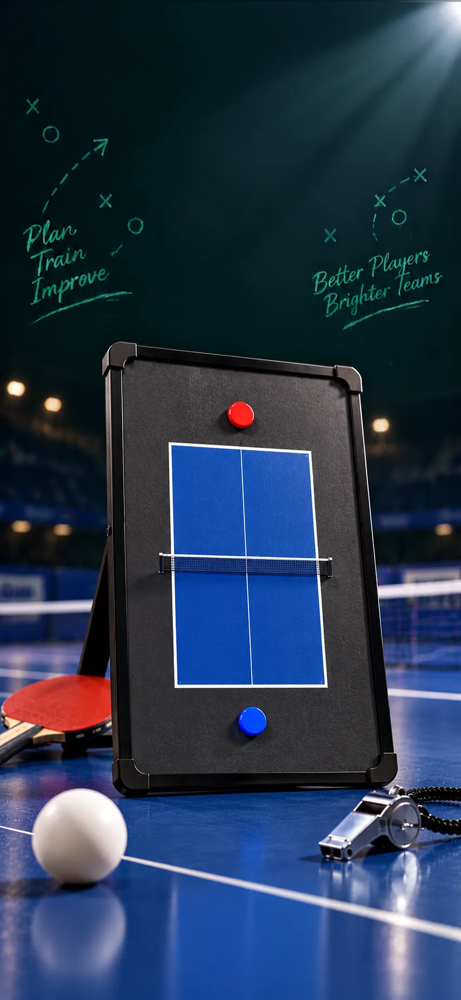
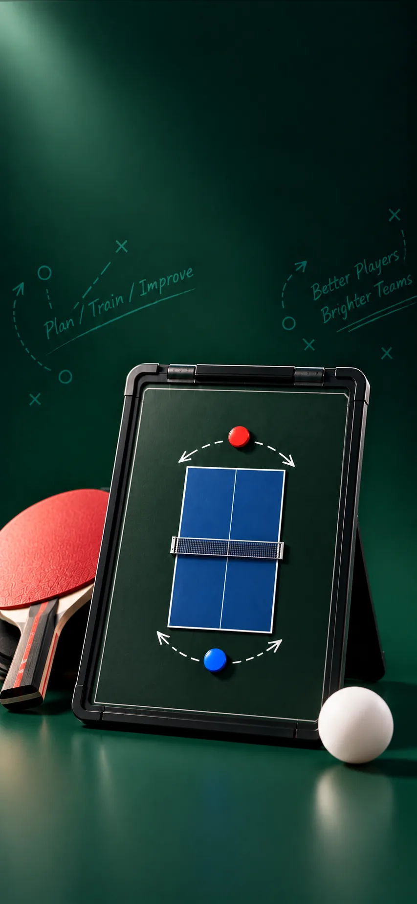
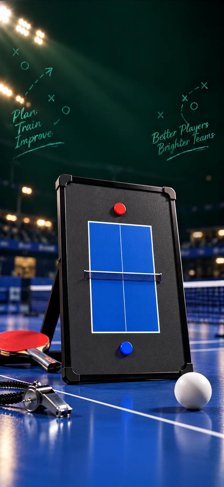
tableTennis_1.png 1080x2340 Premium 3D product render for a mobile app onboarding screen. Vertical 9:19.5 composition (1080x2340). A coach's magnetic tactics board is the subject — black rounded frame, folding hinged corners, slightly glossy surface — standing LEVEL on flat ground — its whole bottom edge resting on the floor, parallel to the floor, not tilted sideways, not floating and not sunk in — leaning back only slightly on its kickstand, turned at a gentle three-quarter angle, lit by one soft key light from the upper left with a cool rim light down its right edge. The board face is painted a dark charcoal floor, with the small table itself in deep blue — the real colour of that sport's playing surface, not a generic green chalkboard. On it: a table tennis table drawn SMALL in the centre of the board as a FLAT top-down 2D diagram — a plain rectangle painted on the board face, its edges parallel to the board's edges, with no perspective, no tilt, no legs, no thickness and no cast shadow (it is a drawing on the board, not an object standing on it) — a blue rectangle with white edge lines, a centre line and the net across the middle — with wide empty dark floor around it on every side, drawn in clean thin SOLID white lines — every court line solid, no dashed or dotted court markings — with one glossy red magnetic disc standing on the floor beyond the far END of the table and one glossy blue disc on the floor beyond the near end, both well outside the table's edge lines (nothing is placed on the table top itself — players stand around a table, not on it), and white solid and dashed arrows tracing each player's sidesteps along the floor at their own end. NO arrows, lines, arcs or trails of any kind on the board — only the magnets NO arrows, lines, arcs or trails of any kind on the board — only the magnets. Close, slightly low camera angle. The board is the clear hero, standing on its own kickstand and filling the middle of the frame. The ground is a dark blue table tennis table top. a white 40mm table tennis ball rests on the ground in front of the board and to the left, close to camera and softly out of focus. a red and black table tennis paddle sits behind the board on the left. a chrome coach’s whistle on a black lanyard lies on the ground to the right of the board. Soft diagonal light rays fall across the backdrop from the upper right. Even in this low light the board face stays clearly a dark charcoal floor, with the small table itself in deep blue, fully lit and readable — not a dark or black chalkboard. Colour: deep desaturated forest green throughout, falling to near-black in the corners, with a soft vignette. The only saturated colours in the frame are the red and blue magnetic discs, the props described above and the board face in its own court colour; everything else is muted green and charcoal. Mint-teal (#18C7BC) chalk doodles float faintly on the background — small hand-drawn X and O marks, curved dashed arrows, and two handwritten cursive lines reading "Plan / Train / Improve" and "Better Players / Brighter Teams" with an underline flourish, all in low-opacity mint chalk, clearly decorative and set back behind the objects. COMPOSITION RULE (most important): the top 40% of the frame must stay empty, dark and uncluttered — only the faint chalk doodles and the background gradient live up there. The board and every prop sit entirely in the lower 60% of the frame. Nothing crosses into the top edge. Render: cinematic shallow depth of field, subtle film grain, soft contact shadows, 3D render and product photography hybrid, ultra clean, high detail, no clutter. Do NOT include: any headline text, numbers, captions, UI elements, buttons, phone frames, device mockups, bezels, logos, watermarks, brand names, people or hands. The only text anywhere in the image is the decorative mint chalk handwriting described above.
tableTennis_2.png 1080x2340 Premium 3D product render for a mobile app onboarding screen. Vertical 9:19.5 composition (1080x2340). A coach's magnetic tactics board is the subject — black rounded frame, folding hinged corners, slightly glossy surface — standing LEVEL on flat ground — its whole bottom edge resting on the floor, parallel to the floor, not tilted sideways, not floating and not sunk in — leaning back only slightly on its kickstand, turned at a gentle three-quarter angle, lit by one soft key light from the upper left with a cool rim light down its right edge. The board face is painted a dark charcoal floor, with the small table itself in deep blue — the real colour of that sport's playing surface, not a generic green chalkboard. On it: a table tennis table drawn SMALL in the centre of the board as a FLAT top-down 2D diagram — a plain rectangle painted on the board face, its edges parallel to the board's edges, with no perspective, no tilt, no legs, no thickness and no cast shadow (it is a drawing on the board, not an object standing on it) — a blue rectangle with white edge lines, a centre line and the net across the middle — with wide empty dark floor around it on every side, drawn in clean thin SOLID white lines — every court line solid, no dashed or dotted court markings — with one glossy red magnetic disc standing on the floor beyond the far END of the table and one glossy blue disc on the floor beyond the near end, both well outside the table's edge lines (nothing is placed on the table top itself — players stand around a table, not on it), and white solid and dashed arrows tracing each player's sidesteps along the floor at their own end. NO arrows, lines, arcs or trails of any kind on the board — only the magnets NO arrows, lines, arcs or trails of any kind on the board — only the magnets. Studio composition. The ground is a dark blue table tennis table top, filling the lower part of the frame as a clean, evenly lit, flat floor with its own real colour and markings, with soft contact shadows under the objects. Above the floor the backdrop is a plain deep-green gradient. The board is centred and tilted back a little, seen slightly from above. a red and black table tennis paddle sits at the left edge of the board, overlapping it. a white 40mm table tennis ball rests at the lower right, just touching the board's corner. Graphic, clean and poster-like rather than photographic. Colour: deep desaturated forest green throughout, falling to near-black in the corners, with a soft vignette. The only saturated colours in the frame are the red and blue magnetic discs, the props described above and the board face in its own court colour; everything else is muted green and charcoal. Mint-teal (#18C7BC) chalk doodles float faintly on the background — small hand-drawn X and O marks, curved dashed arrows, and two handwritten cursive lines reading "Plan / Train / Improve" and "Better Players / Brighter Teams" with an underline flourish, all in low-opacity mint chalk, clearly decorative and set back behind the objects. COMPOSITION RULE (most important): the top 40% of the frame must stay empty, dark and uncluttered — only the faint chalk doodles and the background gradient live up there. The board and every prop sit entirely in the lower 60% of the frame. Nothing crosses into the top edge. Render: cinematic shallow depth of field, subtle film grain, soft contact shadows, 3D render and product photography hybrid, ultra clean, high detail, no clutter. Do NOT include: any headline text, numbers, captions, UI elements, buttons, phone frames, device mockups, bezels, logos, watermarks, brand names, people or hands. The only text anywhere in the image is the decorative mint chalk handwriting described above.
tableTennis_3.png 1080x2340 Premium 3D product render for a mobile app onboarding screen. Vertical 9:19.5 composition (1080x2340). A coach's magnetic tactics board is the subject — black rounded frame, folding hinged corners, slightly glossy surface — standing LEVEL on flat ground — its whole bottom edge resting on the floor, parallel to the floor, not tilted sideways, not floating and not sunk in — leaning back only slightly on its kickstand, turned at a gentle three-quarter angle, lit by one soft key light from the upper left with a cool rim light down its right edge. The board face is painted a dark charcoal floor, with the small table itself in deep blue — the real colour of that sport's playing surface, not a generic green chalkboard. On it: a table tennis table drawn SMALL in the centre of the board as a FLAT top-down 2D diagram — a plain rectangle painted on the board face, its edges parallel to the board's edges, with no perspective, no tilt, no legs, no thickness and no cast shadow (it is a drawing on the board, not an object standing on it) — a blue rectangle with white edge lines, a centre line and the net across the middle — with wide empty dark floor around it on every side, drawn in clean thin SOLID white lines — every court line solid, no dashed or dotted court markings — with one glossy red magnetic disc standing on the floor beyond the far END of the table and one glossy blue disc on the floor beyond the near end, both well outside the table's edge lines (nothing is placed on the table top itself — players stand around a table, not on it), and white solid and dashed arrows tracing each player's sidesteps along the floor at their own end. NO arrows, lines, arcs or trails of any kind on the board — only the magnets NO arrows, lines, arcs or trails of any kind on the board — only the magnets. Wide environmental shot taken on the playing surface itself, from a low sideline angle. a dark blue table tennis table top fills the lower frame, sharp near the camera and softening into darkness toward the back. A row of stadium floodlights glows far out of focus in the upper left corner as small warm bokeh. The board stands centre-frame on the ground. a chrome coach’s whistle on a black lanyard lies at the lower left. a white 40mm table tennis ball rests at the lower right. a red and black table tennis paddle sits further back on the left. Colour: deep desaturated forest green throughout, falling to near-black in the corners, with a soft vignette. The only saturated colours in the frame are the red and blue magnetic discs, the props described above and the board face in its own court colour; everything else is muted green and charcoal. Mint-teal (#18C7BC) chalk doodles float faintly on the background — small hand-drawn X and O marks, curved dashed arrows, and two handwritten cursive lines reading "Plan / Train / Improve" and "Better Players / Brighter Teams" with an underline flourish, all in low-opacity mint chalk, clearly decorative and set back behind the objects. COMPOSITION RULE (most important): the top 40% of the frame must stay empty, dark and uncluttered — only the faint chalk doodles and the background gradient live up there. The board and every prop sit entirely in the lower 60% of the frame. Nothing crosses into the top edge. Render: cinematic shallow depth of field, subtle film grain, soft contact shadows, 3D render and product photography hybrid, ultra clean, high detail, no clutter. Do NOT include: any headline text, numbers, captions, UI elements, buttons, phone frames, device mockups, bezels, logos, watermarks, brand names, people or hands. The only text anywhere in the image is the decorative mint chalk handwriting described above.
网球战术板 tennis · TennisBoard/assets/intro/
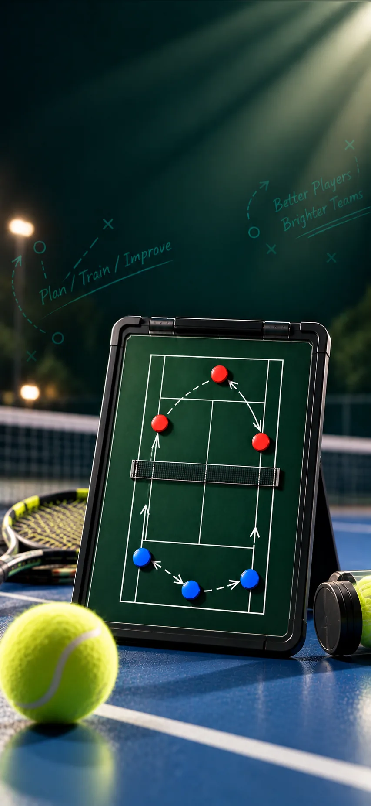
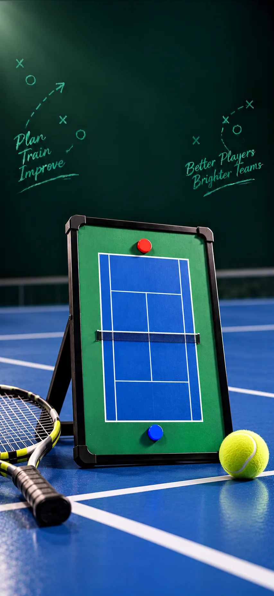
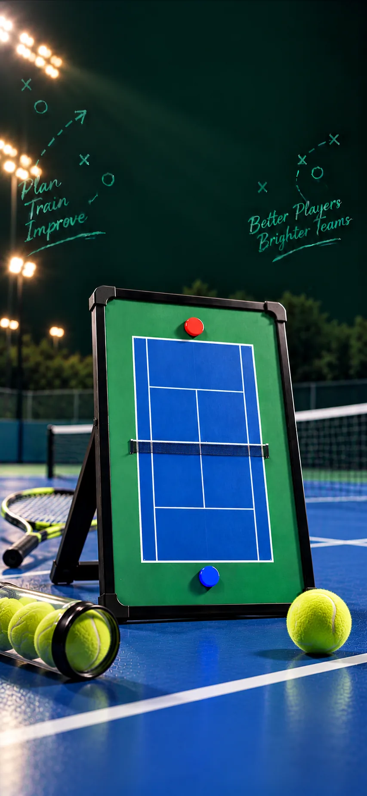
tennis_1.png 1080x2340 Premium 3D product render for a mobile app onboarding screen. Vertical 9:19.5 composition (1080x2340). A coach's magnetic tactics board is the subject — black rounded frame, folding hinged corners, slightly glossy surface — standing LEVEL on flat ground — its whole bottom edge resting on the floor, parallel to the floor, not tilted sideways, not floating and not sunk in — leaning back only slightly on its kickstand, turned at a gentle three-quarter angle, lit by one soft key light from the upper left with a cool rim light down its right edge. The board face is painted blue hard court inside the lines with a green surround — the real colour of that sport's playing surface, not a generic green chalkboard. On it: a tennis court seen vertically, with the service boxes, the baselines and the net line, drawn in clean thin SOLID white lines — every court line solid, no dashed or dotted court markings — with EXACTLY two glossy magnetic discs: one BLUE disc centred just behind the near baseline, one RED disc centred just behind the far baseline. NO arrows, lines, arcs or trails of any kind on the board — only the magnets. Close, slightly low camera angle. The board is the clear hero, standing on its own kickstand and filling the middle of the frame. The ground is a blue acrylic hard court with crisp white lines. a fluorescent yellow tennis ball rests on the ground in front of the board and to the left, close to camera and softly out of focus. a tennis racket lying flat sits behind the board on the left. a can of tennis balls lies on the ground to the right of the board. Soft diagonal light rays fall across the backdrop from the upper right. Even in this low light the board face stays clearly blue hard court inside the lines with a green surround, fully lit and readable — not a dark or black chalkboard. Colour: deep desaturated forest green throughout, falling to near-black in the corners, with a soft vignette. The only saturated colours in the frame are the red and blue magnetic discs, the props described above and the board face in its own court colour; everything else is muted green and charcoal. Mint-teal (#18C7BC) chalk doodles float faintly on the background — small hand-drawn X and O marks, curved dashed arrows, and two handwritten cursive lines reading "Plan / Train / Improve" and "Better Players / Brighter Teams" with an underline flourish, all in low-opacity mint chalk, clearly decorative and set back behind the objects. COMPOSITION RULE (most important): the top 40% of the frame must stay empty, dark and uncluttered — only the faint chalk doodles and the background gradient live up there. The board and every prop sit entirely in the lower 60% of the frame. Nothing crosses into the top edge. Render: cinematic shallow depth of field, subtle film grain, soft contact shadows, 3D render and product photography hybrid, ultra clean, high detail, no clutter. Do NOT include: any headline text, numbers, captions, UI elements, buttons, phone frames, device mockups, bezels, logos, watermarks, brand names, people or hands. The only text anywhere in the image is the decorative mint chalk handwriting described above.
tennis_2.png 1080x2340 Premium 3D product render for a mobile app onboarding screen. Vertical 9:19.5 composition (1080x2340). A coach's magnetic tactics board is the subject — black rounded frame, folding hinged corners, slightly glossy surface — standing LEVEL on flat ground — its whole bottom edge resting on the floor, parallel to the floor, not tilted sideways, not floating and not sunk in — leaning back only slightly on its kickstand, turned at a gentle three-quarter angle, lit by one soft key light from the upper left with a cool rim light down its right edge. The board face is painted blue hard court inside the lines with a green surround — the real colour of that sport's playing surface, not a generic green chalkboard. On it: a tennis court seen vertically, with the service boxes, the baselines and the net line, drawn in clean thin SOLID white lines — every court line solid, no dashed or dotted court markings — with EXACTLY two glossy magnetic discs: one BLUE disc centred just behind the near baseline, one RED disc centred just behind the far baseline. NO arrows, lines, arcs or trails of any kind on the board — only the magnets. Studio composition. The ground is a blue acrylic hard court with crisp white lines, filling the lower part of the frame as a clean, evenly lit, flat floor with its own real colour and markings, with soft contact shadows under the objects. Above the floor the backdrop is a plain deep-green gradient. The board is centred and tilted back a little, seen slightly from above. a tennis racket lying flat sits at the left edge of the board, overlapping it. a fluorescent yellow tennis ball rests at the lower right, just touching the board's corner. Graphic, clean and poster-like rather than photographic. Colour: deep desaturated forest green throughout, falling to near-black in the corners, with a soft vignette. The only saturated colours in the frame are the red and blue magnetic discs, the props described above and the board face in its own court colour; everything else is muted green and charcoal. Mint-teal (#18C7BC) chalk doodles float faintly on the background — small hand-drawn X and O marks, curved dashed arrows, and two handwritten cursive lines reading "Plan / Train / Improve" and "Better Players / Brighter Teams" with an underline flourish, all in low-opacity mint chalk, clearly decorative and set back behind the objects. COMPOSITION RULE (most important): the top 40% of the frame must stay empty, dark and uncluttered — only the faint chalk doodles and the background gradient live up there. The board and every prop sit entirely in the lower 60% of the frame. Nothing crosses into the top edge. Render: cinematic shallow depth of field, subtle film grain, soft contact shadows, 3D render and product photography hybrid, ultra clean, high detail, no clutter. Do NOT include: any headline text, numbers, captions, UI elements, buttons, phone frames, device mockups, bezels, logos, watermarks, brand names, people or hands. The only text anywhere in the image is the decorative mint chalk handwriting described above.
tennis_3.png 1080x2340 Premium 3D product render for a mobile app onboarding screen. Vertical 9:19.5 composition (1080x2340). A coach's magnetic tactics board is the subject — black rounded frame, folding hinged corners, slightly glossy surface — standing LEVEL on flat ground — its whole bottom edge resting on the floor, parallel to the floor, not tilted sideways, not floating and not sunk in — leaning back only slightly on its kickstand, turned at a gentle three-quarter angle, lit by one soft key light from the upper left with a cool rim light down its right edge. The board face is painted blue hard court inside the lines with a green surround — the real colour of that sport's playing surface, not a generic green chalkboard. On it: a tennis court seen vertically, with the service boxes, the baselines and the net line, drawn in clean thin SOLID white lines — every court line solid, no dashed or dotted court markings — with EXACTLY two glossy magnetic discs: one BLUE disc centred just behind the near baseline, one RED disc centred just behind the far baseline. NO arrows, lines, arcs or trails of any kind on the board — only the magnets. Wide environmental shot taken on the playing surface itself, from a low sideline angle. a blue acrylic hard court with crisp white lines fills the lower frame, sharp near the camera and softening into darkness toward the back. A row of stadium floodlights glows far out of focus in the upper left corner as small warm bokeh. The board stands centre-frame on the ground. a can of tennis balls lies at the lower left. a fluorescent yellow tennis ball rests at the lower right. a tennis racket lying flat sits further back on the left. Colour: deep desaturated forest green throughout, falling to near-black in the corners, with a soft vignette. The only saturated colours in the frame are the red and blue magnetic discs, the props described above and the board face in its own court colour; everything else is muted green and charcoal. Mint-teal (#18C7BC) chalk doodles float faintly on the background — small hand-drawn X and O marks, curved dashed arrows, and two handwritten cursive lines reading "Plan / Train / Improve" and "Better Players / Brighter Teams" with an underline flourish, all in low-opacity mint chalk, clearly decorative and set back behind the objects. COMPOSITION RULE (most important): the top 40% of the frame must stay empty, dark and uncluttered — only the faint chalk doodles and the background gradient live up there. The board and every prop sit entirely in the lower 60% of the frame. Nothing crosses into the top edge. Render: cinematic shallow depth of field, subtle film grain, soft contact shadows, 3D render and product photography hybrid, ultra clean, high detail, no clutter. Do NOT include: any headline text, numbers, captions, UI elements, buttons, phone frames, device mockups, bezels, logos, watermarks, brand names, people or hands. The only text anywhere in the image is the decorative mint chalk handwriting described above.
匹克球战术板 pickleball · PickleballBoard/assets/intro/
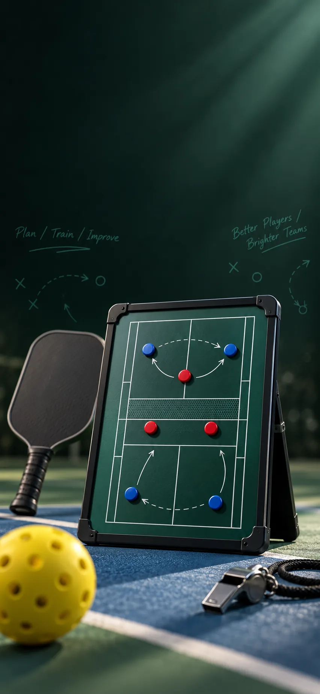
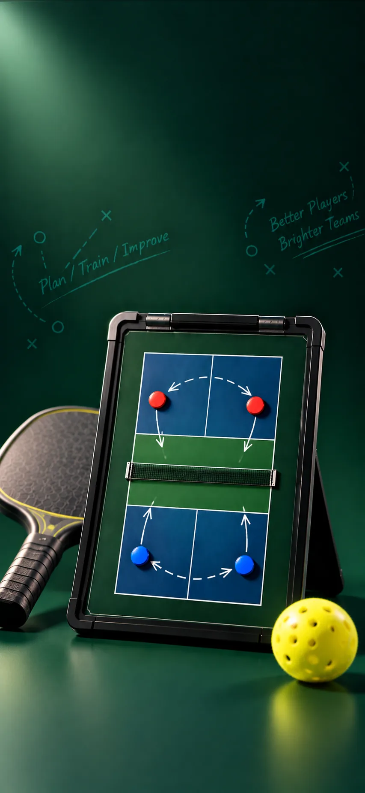
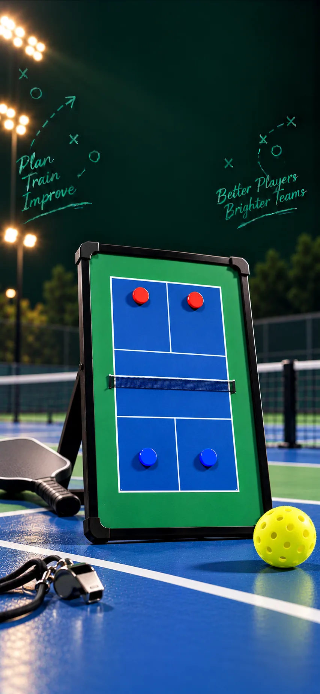
pickleball_1.png 1080x2340 Premium 3D product render for a mobile app onboarding screen. Vertical 9:19.5 composition (1080x2340). A coach's magnetic tactics board is the subject — black rounded frame, folding hinged corners, slightly glossy surface — standing LEVEL on flat ground — its whole bottom edge resting on the floor, parallel to the floor, not tilted sideways, not floating and not sunk in — leaning back only slightly on its kickstand, turned at a gentle three-quarter angle, lit by one soft key light from the upper left with a cool rim light down its right edge. The board face is painted blue court surface with a green surround — the real colour of that sport's playing surface, not a generic green chalkboard. On it: a pickleball court seen vertically, with the non-volley kitchen zone and both service courts, drawn in clean thin SOLID white lines — every court line solid, no dashed or dotted court markings — with EXACTLY four glossy magnetic discs and no others: two BLUE discs side by side just behind the near kitchen line, one in each service court, and two RED discs side by side on the far baseline. One single white dashed arc shows the ball: it leaves the far-right red disc, crosses the net and drops short into the near kitchen — a third-shot drop. NO other arrows, lines or discs on the board. NO arrows, lines, arcs or trails of any kind on the board — only the magnets. Close, slightly low camera angle. The board is the clear hero, standing on its own kickstand and filling the middle of the frame. The ground is a blue and green pickleball court surface. a yellow perforated plastic pickleball rests on the ground in front of the board and to the left, close to camera and softly out of focus. a pickleball paddle — a SOLID flat slab of graphite with a square face and rounded corners and a short grip, like an oversized table tennis bat, with NO strings and NO oval head: it is not a tennis or badminton racket sits behind the board on the left. a chrome coach’s whistle on a black lanyard lies on the ground to the right of the board. Soft diagonal light rays fall across the backdrop from the upper right. Even in this low light the board face stays clearly blue court surface with a green surround, fully lit and readable — not a dark or black chalkboard. Colour: deep desaturated forest green throughout, falling to near-black in the corners, with a soft vignette. The only saturated colours in the frame are the red and blue magnetic discs, the props described above and the board face in its own court colour; everything else is muted green and charcoal. Mint-teal (#18C7BC) chalk doodles float faintly on the background — small hand-drawn X and O marks, curved dashed arrows, and two handwritten cursive lines reading "Plan / Train / Improve" and "Better Players / Brighter Teams" with an underline flourish, all in low-opacity mint chalk, clearly decorative and set back behind the objects. COMPOSITION RULE (most important): the top 40% of the frame must stay empty, dark and uncluttered — only the faint chalk doodles and the background gradient live up there. The board and every prop sit entirely in the lower 60% of the frame. Nothing crosses into the top edge. Render: cinematic shallow depth of field, subtle film grain, soft contact shadows, 3D render and product photography hybrid, ultra clean, high detail, no clutter. Do NOT include: any headline text, numbers, captions, UI elements, buttons, phone frames, device mockups, bezels, logos, watermarks, brand names, people or hands. The only text anywhere in the image is the decorative mint chalk handwriting described above.
pickleball_2.png 1080x2340 Premium 3D product render for a mobile app onboarding screen. Vertical 9:19.5 composition (1080x2340). A coach's magnetic tactics board is the subject — black rounded frame, folding hinged corners, slightly glossy surface — standing LEVEL on flat ground — its whole bottom edge resting on the floor, parallel to the floor, not tilted sideways, not floating and not sunk in — leaning back only slightly on its kickstand, turned at a gentle three-quarter angle, lit by one soft key light from the upper left with a cool rim light down its right edge. The board face is painted blue court surface with a green surround — the real colour of that sport's playing surface, not a generic green chalkboard. On it: a pickleball court seen vertically, with the non-volley kitchen zone and both service courts, drawn in clean thin SOLID white lines — every court line solid, no dashed or dotted court markings — with EXACTLY four glossy magnetic discs and no others: two BLUE discs side by side just behind the near kitchen line, one in each service court, and two RED discs side by side on the far baseline. One single white dashed arc shows the ball: it leaves the far-right red disc, crosses the net and drops short into the near kitchen — a third-shot drop. NO other arrows, lines or discs on the board. NO arrows, lines, arcs or trails of any kind on the board — only the magnets. Studio composition. The ground is a blue and green pickleball court surface, filling the lower part of the frame as a clean, evenly lit, flat floor with its own real colour and markings, with soft contact shadows under the objects. Above the floor the backdrop is a plain deep-green gradient. The board is centred and tilted back a little, seen slightly from above. a pickleball paddle — a SOLID flat slab of graphite with a square face and rounded corners and a short grip, like an oversized table tennis bat, with NO strings and NO oval head: it is not a tennis or badminton racket sits at the left edge of the board, overlapping it. a yellow perforated plastic pickleball rests at the lower right, just touching the board's corner. Graphic, clean and poster-like rather than photographic. Colour: deep desaturated forest green throughout, falling to near-black in the corners, with a soft vignette. The only saturated colours in the frame are the red and blue magnetic discs, the props described above and the board face in its own court colour; everything else is muted green and charcoal. Mint-teal (#18C7BC) chalk doodles float faintly on the background — small hand-drawn X and O marks, curved dashed arrows, and two handwritten cursive lines reading "Plan / Train / Improve" and "Better Players / Brighter Teams" with an underline flourish, all in low-opacity mint chalk, clearly decorative and set back behind the objects. COMPOSITION RULE (most important): the top 40% of the frame must stay empty, dark and uncluttered — only the faint chalk doodles and the background gradient live up there. The board and every prop sit entirely in the lower 60% of the frame. Nothing crosses into the top edge. Render: cinematic shallow depth of field, subtle film grain, soft contact shadows, 3D render and product photography hybrid, ultra clean, high detail, no clutter. Do NOT include: any headline text, numbers, captions, UI elements, buttons, phone frames, device mockups, bezels, logos, watermarks, brand names, people or hands. The only text anywhere in the image is the decorative mint chalk handwriting described above.
pickleball_3.png 1080x2340 Premium 3D product render for a mobile app onboarding screen. Vertical 9:19.5 composition (1080x2340). A coach's magnetic tactics board is the subject — black rounded frame, folding hinged corners, slightly glossy surface — standing LEVEL on flat ground — its whole bottom edge resting on the floor, parallel to the floor, not tilted sideways, not floating and not sunk in — leaning back only slightly on its kickstand, turned at a gentle three-quarter angle, lit by one soft key light from the upper left with a cool rim light down its right edge. The board face is painted blue court surface with a green surround — the real colour of that sport's playing surface, not a generic green chalkboard. On it: a pickleball court seen vertically, with the non-volley kitchen zone and both service courts, drawn in clean thin SOLID white lines — every court line solid, no dashed or dotted court markings — with EXACTLY four glossy magnetic discs and no others: two BLUE discs side by side just behind the near kitchen line, one in each service court, and two RED discs side by side on the far baseline. One single white dashed arc shows the ball: it leaves the far-right red disc, crosses the net and drops short into the near kitchen — a third-shot drop. NO other arrows, lines or discs on the board. NO arrows, lines, arcs or trails of any kind on the board — only the magnets. Wide environmental shot taken on the playing surface itself, from a low sideline angle. a blue and green pickleball court surface fills the lower frame, sharp near the camera and softening into darkness toward the back. A row of stadium floodlights glows far out of focus in the upper left corner as small warm bokeh. The board stands centre-frame on the ground. a chrome coach’s whistle on a black lanyard lies at the lower left. a yellow perforated plastic pickleball rests at the lower right. a pickleball paddle — a SOLID flat slab of graphite with a square face and rounded corners and a short grip, like an oversized table tennis bat, with NO strings and NO oval head: it is not a tennis or badminton racket sits further back on the left. Colour: deep desaturated forest green throughout, falling to near-black in the corners, with a soft vignette. The only saturated colours in the frame are the red and blue magnetic discs, the props described above and the board face in its own court colour; everything else is muted green and charcoal. Mint-teal (#18C7BC) chalk doodles float faintly on the background — small hand-drawn X and O marks, curved dashed arrows, and two handwritten cursive lines reading "Plan / Train / Improve" and "Better Players / Brighter Teams" with an underline flourish, all in low-opacity mint chalk, clearly decorative and set back behind the objects. COMPOSITION RULE (most important): the top 40% of the frame must stay empty, dark and uncluttered — only the faint chalk doodles and the background gradient live up there. The board and every prop sit entirely in the lower 60% of the frame. Nothing crosses into the top edge. Render: cinematic shallow depth of field, subtle film grain, soft contact shadows, 3D render and product photography hybrid, ultra clean, high detail, no clutter. Do NOT include: any headline text, numbers, captions, UI elements, buttons, phone frames, device mockups, bezels, logos, watermarks, brand names, people or hands. The only text anywhere in the image is the decorative mint chalk handwriting described above.
曲棍球战术板 fieldHockey · FieldHockeyBoard/assets/intro/
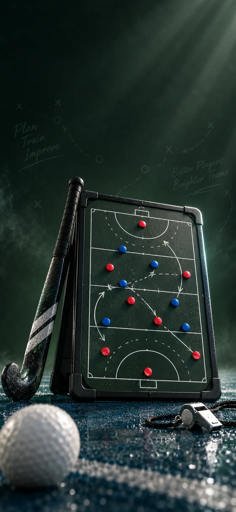
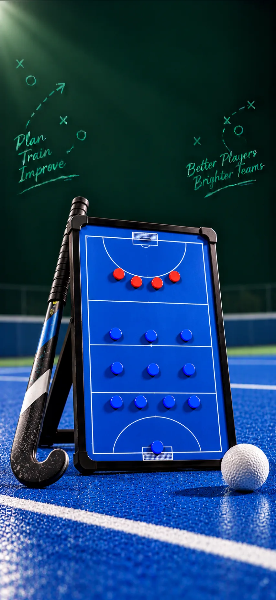
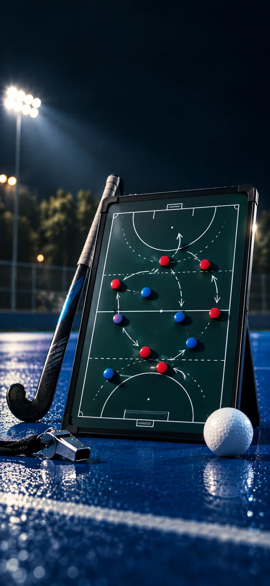
fieldHockey_1.png 1080x2340 Premium 3D product render for a mobile app onboarding screen. Vertical 9:19.5 composition (1080x2340). A coach's magnetic tactics board is the subject — black rounded frame, folding hinged corners, slightly glossy surface — standing LEVEL on flat ground — its whole bottom edge resting on the floor, parallel to the floor, not tilted sideways, not floating and not sunk in — leaning back only slightly on its kickstand, turned at a gentle three-quarter angle, lit by one soft key light from the upper left with a cool rim light down its right edge. The board face is painted blue water-based synthetic turf — the real colour of that sport's playing surface, not a generic green chalkboard. On it: a field hockey pitch seen vertically, with both shooting circles and the 23-metre lines, drawn in clean thin SOLID white lines — every court line solid, no dashed or dotted court markings — with glossy BLUE magnetic discs set out as a 4-3-3 in the near half (a goalkeeper in the goal, a back four, three midfielders, three forwards) and four RED discs as a defensive line just outside the far shooting circle. NO arrows, lines, arcs or trails of any kind on the board — only the magnets. Close, slightly low camera angle. The board is the clear hero, standing on its own kickstand and filling the middle of the frame. The ground is blue water-based astroturf, still damp and faintly reflective. a white dimpled field hockey ball rests on the ground in front of the board and to the left, close to camera and softly out of focus. a field hockey stick leaning against the board sits behind the board on the left. a chrome coach’s whistle on a black lanyard lies on the ground to the right of the board. Soft diagonal light rays fall across the backdrop from the upper right. Even in this low light the board face stays clearly blue water-based synthetic turf, fully lit and readable — not a dark or black chalkboard. Colour: deep desaturated forest green throughout, falling to near-black in the corners, with a soft vignette. The only saturated colours in the frame are the red and blue magnetic discs, the props described above and the board face in its own court colour; everything else is muted green and charcoal. Mint-teal (#18C7BC) chalk doodles float faintly on the background — small hand-drawn X and O marks, curved dashed arrows, and two handwritten cursive lines reading "Plan / Train / Improve" and "Better Players / Brighter Teams" with an underline flourish, all in low-opacity mint chalk, clearly decorative and set back behind the objects. COMPOSITION RULE (most important): the top 40% of the frame must stay empty, dark and uncluttered — only the faint chalk doodles and the background gradient live up there. The board and every prop sit entirely in the lower 60% of the frame. Nothing crosses into the top edge. Render: cinematic shallow depth of field, subtle film grain, soft contact shadows, 3D render and product photography hybrid, ultra clean, high detail, no clutter. Do NOT include: any headline text, numbers, captions, UI elements, buttons, phone frames, device mockups, bezels, logos, watermarks, brand names, people or hands. The only text anywhere in the image is the decorative mint chalk handwriting described above.
fieldHockey_2.png 1080x2340 Premium 3D product render for a mobile app onboarding screen. Vertical 9:19.5 composition (1080x2340). A coach's magnetic tactics board is the subject — black rounded frame, folding hinged corners, slightly glossy surface — standing LEVEL on flat ground — its whole bottom edge resting on the floor, parallel to the floor, not tilted sideways, not floating and not sunk in — leaning back only slightly on its kickstand, turned at a gentle three-quarter angle, lit by one soft key light from the upper left with a cool rim light down its right edge. The board face is painted blue water-based synthetic turf — the real colour of that sport's playing surface, not a generic green chalkboard. On it: a field hockey pitch seen vertically, with both shooting circles and the 23-metre lines, drawn in clean thin SOLID white lines — every court line solid, no dashed or dotted court markings — with glossy BLUE magnetic discs set out as a 4-3-3 in the near half (a goalkeeper in the goal, a back four, three midfielders, three forwards) and four RED discs as a defensive line just outside the far shooting circle. NO arrows, lines, arcs or trails of any kind on the board — only the magnets. Studio composition. The ground is blue water-based astroturf, still damp and faintly reflective, filling the lower part of the frame as a clean, evenly lit, flat floor with its own real colour and markings, with soft contact shadows under the objects. Above the floor the backdrop is a plain deep-green gradient. The board is centred and tilted back a little, seen slightly from above. a field hockey stick leaning against the board sits at the left edge of the board, overlapping it. a white dimpled field hockey ball rests at the lower right, just touching the board's corner. Graphic, clean and poster-like rather than photographic. Colour: deep desaturated forest green throughout, falling to near-black in the corners, with a soft vignette. The only saturated colours in the frame are the red and blue magnetic discs, the props described above and the board face in its own court colour; everything else is muted green and charcoal. Mint-teal (#18C7BC) chalk doodles float faintly on the background — small hand-drawn X and O marks, curved dashed arrows, and two handwritten cursive lines reading "Plan / Train / Improve" and "Better Players / Brighter Teams" with an underline flourish, all in low-opacity mint chalk, clearly decorative and set back behind the objects. COMPOSITION RULE (most important): the top 40% of the frame must stay empty, dark and uncluttered — only the faint chalk doodles and the background gradient live up there. The board and every prop sit entirely in the lower 60% of the frame. Nothing crosses into the top edge. Render: cinematic shallow depth of field, subtle film grain, soft contact shadows, 3D render and product photography hybrid, ultra clean, high detail, no clutter. Do NOT include: any headline text, numbers, captions, UI elements, buttons, phone frames, device mockups, bezels, logos, watermarks, brand names, people or hands. The only text anywhere in the image is the decorative mint chalk handwriting described above.
fieldHockey_3.png 1080x2340 Premium 3D product render for a mobile app onboarding screen. Vertical 9:19.5 composition (1080x2340). A coach's magnetic tactics board is the subject — black rounded frame, folding hinged corners, slightly glossy surface — standing LEVEL on flat ground — its whole bottom edge resting on the floor, parallel to the floor, not tilted sideways, not floating and not sunk in — leaning back only slightly on its kickstand, turned at a gentle three-quarter angle, lit by one soft key light from the upper left with a cool rim light down its right edge. The board face is painted blue water-based synthetic turf — the real colour of that sport's playing surface, not a generic green chalkboard. On it: a field hockey pitch seen vertically, with both shooting circles and the 23-metre lines, drawn in clean thin SOLID white lines — every court line solid, no dashed or dotted court markings — with glossy BLUE magnetic discs set out as a 4-3-3 in the near half (a goalkeeper in the goal, a back four, three midfielders, three forwards) and four RED discs as a defensive line just outside the far shooting circle. NO arrows, lines, arcs or trails of any kind on the board — only the magnets. Wide environmental shot taken on the playing surface itself, from a low sideline angle. blue water-based astroturf, still damp and faintly reflective fills the lower frame, sharp near the camera and softening into darkness toward the back. A row of stadium floodlights glows far out of focus in the upper left corner as small warm bokeh. The board stands centre-frame on the ground. a chrome coach’s whistle on a black lanyard lies at the lower left. a white dimpled field hockey ball rests at the lower right. a field hockey stick leaning against the board sits further back on the left. Colour: deep desaturated forest green throughout, falling to near-black in the corners, with a soft vignette. The only saturated colours in the frame are the red and blue magnetic discs, the props described above and the board face in its own court colour; everything else is muted green and charcoal. Mint-teal (#18C7BC) chalk doodles float faintly on the background — small hand-drawn X and O marks, curved dashed arrows, and two handwritten cursive lines reading "Plan / Train / Improve" and "Better Players / Brighter Teams" with an underline flourish, all in low-opacity mint chalk, clearly decorative and set back behind the objects. COMPOSITION RULE (most important): the top 40% of the frame must stay empty, dark and uncluttered — only the faint chalk doodles and the background gradient live up there. The board and every prop sit entirely in the lower 60% of the frame. Nothing crosses into the top edge. Render: cinematic shallow depth of field, subtle film grain, soft contact shadows, 3D render and product photography hybrid, ultra clean, high detail, no clutter. Do NOT include: any headline text, numbers, captions, UI elements, buttons, phone frames, device mockups, bezels, logos, watermarks, brand names, people or hands. The only text anywhere in the image is the decorative mint chalk handwriting described above.
橄榄球战术板 rugby · RugbyBoard/assets/intro/
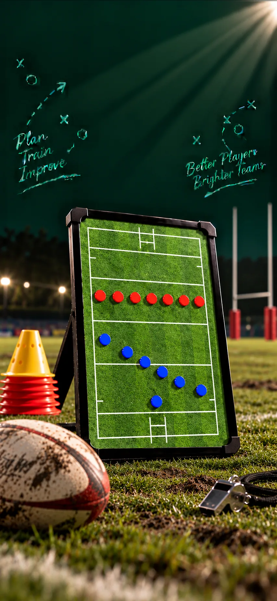
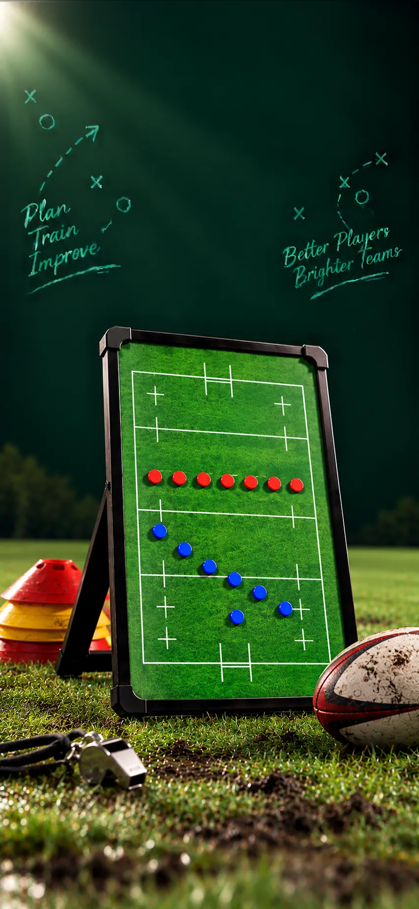
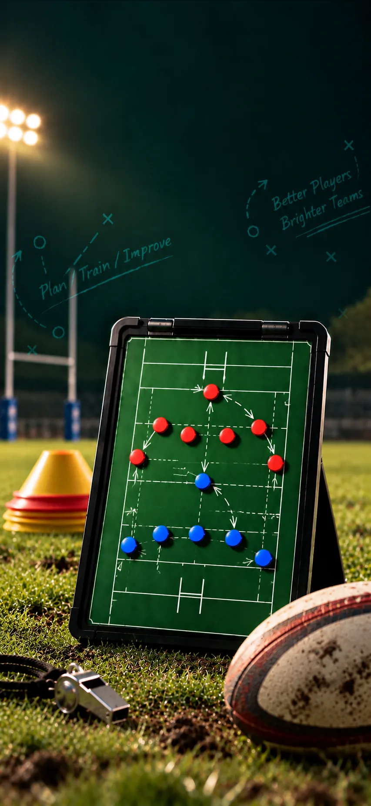
rugby_1.png 1080x2340 Premium 3D product render for a mobile app onboarding screen. Vertical 9:19.5 composition (1080x2340). A coach's magnetic tactics board is the subject — black rounded frame, folding hinged corners, slightly glossy surface — standing LEVEL on flat ground — its whole bottom edge resting on the floor, parallel to the floor, not tilted sideways, not floating and not sunk in — leaning back only slightly on its kickstand, turned at a gentle three-quarter angle, lit by one soft key light from the upper left with a cool rim light down its right edge. The board face is painted green grass — the real colour of that sport's playing surface, not a generic green chalkboard. On it: a rugby pitch seen vertically, with the in-goal areas, the 22-metre lines and the halfway line, drawn in clean thin SOLID white lines — every court line solid, no dashed or dotted court markings — with a BLUE backline of seven magnetic discs fanned out diagonally from a ruck near the near 22-metre line — scrum-half at the ruck, fly-half, two centres, two wings, full-back behind — and seven RED discs in a flat defensive line across the pitch facing them. NO arrows, lines, arcs or trails of any kind on the board — only the magnets. Close, slightly low camera angle. The board is the clear hero, standing on its own kickstand and filling the middle of the frame. The ground is worn green grass with patches of churned mud. an oval brown and white rugby ball rests on the ground in front of the board and to the left, close to camera and softly out of focus. a stack of red and yellow training cones sits behind the board on the left. a chrome coach’s whistle on a black lanyard lies on the ground to the right of the board. Soft diagonal light rays fall across the backdrop from the upper right. Even in this low light the board face stays clearly green grass, fully lit and readable — not a dark or black chalkboard. Colour: deep desaturated forest green throughout, falling to near-black in the corners, with a soft vignette. The only saturated colours in the frame are the red and blue magnetic discs, the props described above and the board face in its own court colour; everything else is muted green and charcoal. Mint-teal (#18C7BC) chalk doodles float faintly on the background — small hand-drawn X and O marks, curved dashed arrows, and two handwritten cursive lines reading "Plan / Train / Improve" and "Better Players / Brighter Teams" with an underline flourish, all in low-opacity mint chalk, clearly decorative and set back behind the objects. COMPOSITION RULE (most important): the top 40% of the frame must stay empty, dark and uncluttered — only the faint chalk doodles and the background gradient live up there. The board and every prop sit entirely in the lower 60% of the frame. Nothing crosses into the top edge. Render: cinematic shallow depth of field, subtle film grain, soft contact shadows, 3D render and product photography hybrid, ultra clean, high detail, no clutter. Do NOT include: any headline text, numbers, captions, UI elements, buttons, phone frames, device mockups, bezels, logos, watermarks, brand names, people or hands. The only text anywhere in the image is the decorative mint chalk handwriting described above.
rugby_2.png 1080x2340 Premium 3D product render for a mobile app onboarding screen. Vertical 9:19.5 composition (1080x2340). A coach's magnetic tactics board is the subject — black rounded frame, folding hinged corners, slightly glossy surface — standing LEVEL on flat ground — its whole bottom edge resting on the floor, parallel to the floor, not tilted sideways, not floating and not sunk in — leaning back only slightly on its kickstand, turned at a gentle three-quarter angle, lit by one soft key light from the upper left with a cool rim light down its right edge. The board face is painted green grass — the real colour of that sport's playing surface, not a generic green chalkboard. On it: a rugby pitch seen vertically, with the in-goal areas, the 22-metre lines and the halfway line, drawn in clean thin SOLID white lines — every court line solid, no dashed or dotted court markings — with a BLUE backline of seven magnetic discs fanned out diagonally from a ruck near the near 22-metre line — scrum-half at the ruck, fly-half, two centres, two wings, full-back behind — and seven RED discs in a flat defensive line across the pitch facing them. NO arrows, lines, arcs or trails of any kind on the board — only the magnets. Studio composition. The ground is worn green grass with patches of churned mud, filling the lower part of the frame as a clean, evenly lit, flat floor with its own real colour and markings, with soft contact shadows under the objects. Above the floor the backdrop is a plain deep-green gradient. The board is centred and tilted back a little, seen slightly from above. a stack of red and yellow training cones sits at the left edge of the board, overlapping it. an oval brown and white rugby ball rests at the lower right, just touching the board's corner. Graphic, clean and poster-like rather than photographic. Colour: deep desaturated forest green throughout, falling to near-black in the corners, with a soft vignette. The only saturated colours in the frame are the red and blue magnetic discs, the props described above and the board face in its own court colour; everything else is muted green and charcoal. Mint-teal (#18C7BC) chalk doodles float faintly on the background — small hand-drawn X and O marks, curved dashed arrows, and two handwritten cursive lines reading "Plan / Train / Improve" and "Better Players / Brighter Teams" with an underline flourish, all in low-opacity mint chalk, clearly decorative and set back behind the objects. COMPOSITION RULE (most important): the top 40% of the frame must stay empty, dark and uncluttered — only the faint chalk doodles and the background gradient live up there. The board and every prop sit entirely in the lower 60% of the frame. Nothing crosses into the top edge. Render: cinematic shallow depth of field, subtle film grain, soft contact shadows, 3D render and product photography hybrid, ultra clean, high detail, no clutter. Do NOT include: any headline text, numbers, captions, UI elements, buttons, phone frames, device mockups, bezels, logos, watermarks, brand names, people or hands. The only text anywhere in the image is the decorative mint chalk handwriting described above.
rugby_3.png 1080x2340 Premium 3D product render for a mobile app onboarding screen. Vertical 9:19.5 composition (1080x2340). A coach's magnetic tactics board is the subject — black rounded frame, folding hinged corners, slightly glossy surface — standing LEVEL on flat ground — its whole bottom edge resting on the floor, parallel to the floor, not tilted sideways, not floating and not sunk in — leaning back only slightly on its kickstand, turned at a gentle three-quarter angle, lit by one soft key light from the upper left with a cool rim light down its right edge. The board face is painted green grass — the real colour of that sport's playing surface, not a generic green chalkboard. On it: a rugby pitch seen vertically, with the in-goal areas, the 22-metre lines and the halfway line, drawn in clean thin SOLID white lines — every court line solid, no dashed or dotted court markings — with a BLUE backline of seven magnetic discs fanned out diagonally from a ruck near the near 22-metre line — scrum-half at the ruck, fly-half, two centres, two wings, full-back behind — and seven RED discs in a flat defensive line across the pitch facing them. NO arrows, lines, arcs or trails of any kind on the board — only the magnets. Wide environmental shot taken on the playing surface itself, from a low sideline angle. worn green grass with patches of churned mud fills the lower frame, sharp near the camera and softening into darkness toward the back. A row of stadium floodlights glows far out of focus in the upper left corner as small warm bokeh. The board stands centre-frame on the ground. a chrome coach’s whistle on a black lanyard lies at the lower left. an oval brown and white rugby ball rests at the lower right. a stack of red and yellow training cones sits further back on the left. Colour: deep desaturated forest green throughout, falling to near-black in the corners, with a soft vignette. The only saturated colours in the frame are the red and blue magnetic discs, the props described above and the board face in its own court colour; everything else is muted green and charcoal. Mint-teal (#18C7BC) chalk doodles float faintly on the background — small hand-drawn X and O marks, curved dashed arrows, and two handwritten cursive lines reading "Plan / Train / Improve" and "Better Players / Brighter Teams" with an underline flourish, all in low-opacity mint chalk, clearly decorative and set back behind the objects. COMPOSITION RULE (most important): the top 40% of the frame must stay empty, dark and uncluttered — only the faint chalk doodles and the background gradient live up there. The board and every prop sit entirely in the lower 60% of the frame. Nothing crosses into the top edge. Render: cinematic shallow depth of field, subtle film grain, soft contact shadows, 3D render and product photography hybrid, ultra clean, high detail, no clutter. Do NOT include: any headline text, numbers, captions, UI elements, buttons, phone frames, device mockups, bezels, logos, watermarks, brand names, people or hands. The only text anywhere in the image is the decorative mint chalk handwriting described above.
棒球战术板 baseball · BaseballBoard/assets/intro/
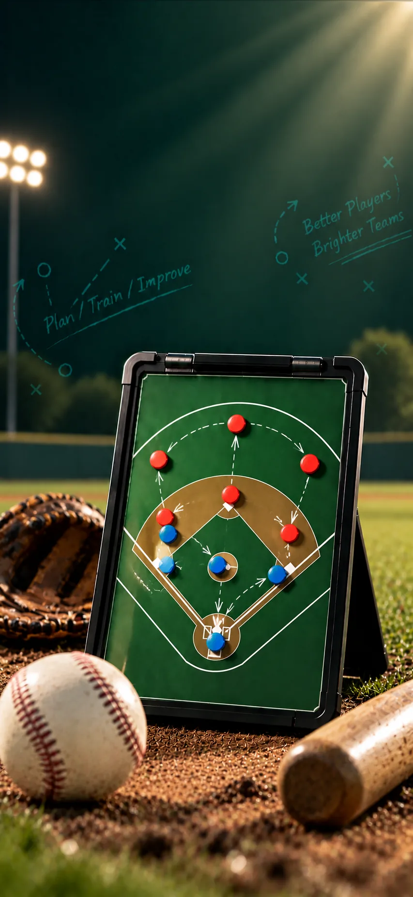
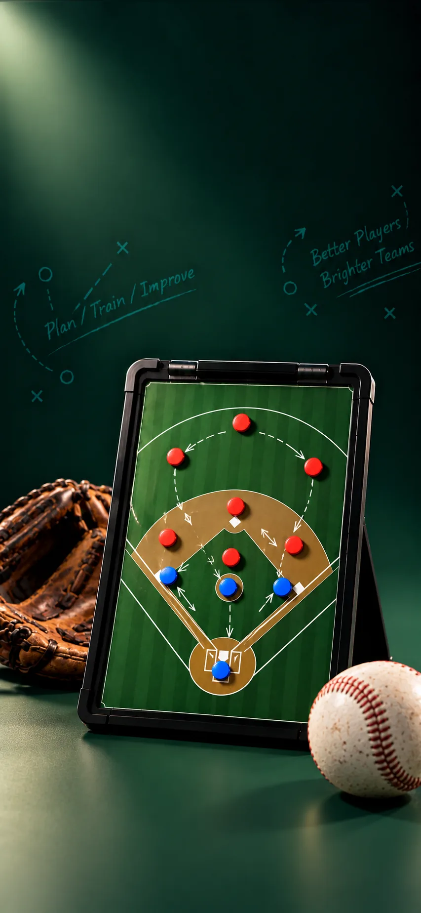
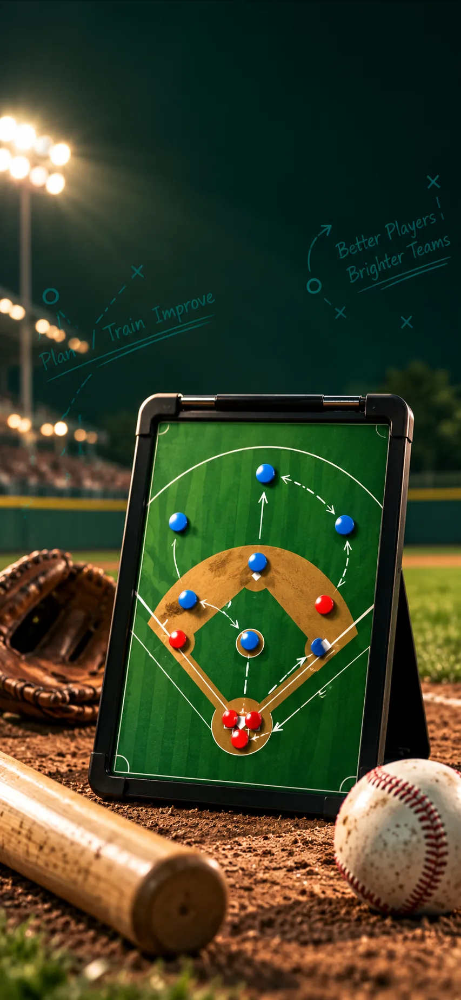
baseball_1.png 1080x2340 Premium 3D product render for a mobile app onboarding screen. Vertical 9:19.5 composition (1080x2340). A coach's magnetic tactics board is the subject — black rounded frame, folding hinged corners, slightly glossy surface — standing LEVEL on flat ground — its whole bottom edge resting on the floor, parallel to the floor, not tilted sideways, not floating and not sunk in — leaning back only slightly on its kickstand, turned at a gentle three-quarter angle, lit by one soft key light from the upper left with a cool rim light down its right edge. The board face is painted green grass with a reddish-brown dirt infield — the real colour of that sport's playing surface, not a generic green chalkboard. On it: a baseball diamond seen from above, with the infield, the bases and the foul lines, drawn in clean thin SOLID white lines — every court line solid, no dashed or dotted court markings — with nine RED magnetic discs at the fielding positions — pitcher on the mound, catcher behind home plate, first, second and third base, shortstop, left, centre and right field — and one BLUE disc on first base as a runner. NO arrows, lines, arcs or trails of any kind on the board — only the magnets. Close, slightly low camera angle. The board is the clear hero, standing on its own kickstand and filling the middle of the frame. The ground is the edge of a dirt infield meeting mown outfield grass. a white baseball with red stitching rests on the ground in front of the board and to the left, close to camera and softly out of focus. a worn leather catcher’s glove sits behind the board on the left. a wooden baseball bat lying flat lies on the ground to the right of the board. Soft diagonal light rays fall across the backdrop from the upper right. Even in this low light the board face stays clearly green grass with a reddish-brown dirt infield, fully lit and readable — not a dark or black chalkboard. Colour: deep desaturated forest green throughout, falling to near-black in the corners, with a soft vignette. The only saturated colours in the frame are the red and blue magnetic discs, the props described above and the board face in its own court colour; everything else is muted green and charcoal. Mint-teal (#18C7BC) chalk doodles float faintly on the background — small hand-drawn X and O marks, curved dashed arrows, and two handwritten cursive lines reading "Plan / Train / Improve" and "Better Players / Brighter Teams" with an underline flourish, all in low-opacity mint chalk, clearly decorative and set back behind the objects. COMPOSITION RULE (most important): the top 40% of the frame must stay empty, dark and uncluttered — only the faint chalk doodles and the background gradient live up there. The board and every prop sit entirely in the lower 60% of the frame. Nothing crosses into the top edge. Render: cinematic shallow depth of field, subtle film grain, soft contact shadows, 3D render and product photography hybrid, ultra clean, high detail, no clutter. Do NOT include: any headline text, numbers, captions, UI elements, buttons, phone frames, device mockups, bezels, logos, watermarks, brand names, people or hands. The only text anywhere in the image is the decorative mint chalk handwriting described above.
baseball_2.png 1080x2340 Premium 3D product render for a mobile app onboarding screen. Vertical 9:19.5 composition (1080x2340). A coach's magnetic tactics board is the subject — black rounded frame, folding hinged corners, slightly glossy surface — standing LEVEL on flat ground — its whole bottom edge resting on the floor, parallel to the floor, not tilted sideways, not floating and not sunk in — leaning back only slightly on its kickstand, turned at a gentle three-quarter angle, lit by one soft key light from the upper left with a cool rim light down its right edge. The board face is painted green grass with a reddish-brown dirt infield — the real colour of that sport's playing surface, not a generic green chalkboard. On it: a baseball diamond seen from above, with the infield, the bases and the foul lines, drawn in clean thin SOLID white lines — every court line solid, no dashed or dotted court markings — with nine RED magnetic discs at the fielding positions — pitcher on the mound, catcher behind home plate, first, second and third base, shortstop, left, centre and right field — and one BLUE disc on first base as a runner. NO arrows, lines, arcs or trails of any kind on the board — only the magnets. Studio composition. The ground is the edge of a dirt infield meeting mown outfield grass, filling the lower part of the frame as a clean, evenly lit, flat floor with its own real colour and markings, with soft contact shadows under the objects. Above the floor the backdrop is a plain deep-green gradient. The board is centred and tilted back a little, seen slightly from above. a worn leather catcher’s glove sits at the left edge of the board, overlapping it. a white baseball with red stitching rests at the lower right, just touching the board's corner. Graphic, clean and poster-like rather than photographic. Colour: deep desaturated forest green throughout, falling to near-black in the corners, with a soft vignette. The only saturated colours in the frame are the red and blue magnetic discs, the props described above and the board face in its own court colour; everything else is muted green and charcoal. Mint-teal (#18C7BC) chalk doodles float faintly on the background — small hand-drawn X and O marks, curved dashed arrows, and two handwritten cursive lines reading "Plan / Train / Improve" and "Better Players / Brighter Teams" with an underline flourish, all in low-opacity mint chalk, clearly decorative and set back behind the objects. COMPOSITION RULE (most important): the top 40% of the frame must stay empty, dark and uncluttered — only the faint chalk doodles and the background gradient live up there. The board and every prop sit entirely in the lower 60% of the frame. Nothing crosses into the top edge. Render: cinematic shallow depth of field, subtle film grain, soft contact shadows, 3D render and product photography hybrid, ultra clean, high detail, no clutter. Do NOT include: any headline text, numbers, captions, UI elements, buttons, phone frames, device mockups, bezels, logos, watermarks, brand names, people or hands. The only text anywhere in the image is the decorative mint chalk handwriting described above.
baseball_3.png 1080x2340 Premium 3D product render for a mobile app onboarding screen. Vertical 9:19.5 composition (1080x2340). A coach's magnetic tactics board is the subject — black rounded frame, folding hinged corners, slightly glossy surface — standing LEVEL on flat ground — its whole bottom edge resting on the floor, parallel to the floor, not tilted sideways, not floating and not sunk in — leaning back only slightly on its kickstand, turned at a gentle three-quarter angle, lit by one soft key light from the upper left with a cool rim light down its right edge. The board face is painted green grass with a reddish-brown dirt infield — the real colour of that sport's playing surface, not a generic green chalkboard. On it: a baseball diamond seen from above, with the infield, the bases and the foul lines, drawn in clean thin SOLID white lines — every court line solid, no dashed or dotted court markings — with nine RED magnetic discs at the fielding positions — pitcher on the mound, catcher behind home plate, first, second and third base, shortstop, left, centre and right field — and one BLUE disc on first base as a runner. NO arrows, lines, arcs or trails of any kind on the board — only the magnets. Wide environmental shot taken on the playing surface itself, from a low sideline angle. the edge of a dirt infield meeting mown outfield grass fills the lower frame, sharp near the camera and softening into darkness toward the back. A row of stadium floodlights glows far out of focus in the upper left corner as small warm bokeh. The board stands centre-frame on the ground. a wooden baseball bat lying flat lies at the lower left. a white baseball with red stitching rests at the lower right. a worn leather catcher’s glove sits further back on the left. Colour: deep desaturated forest green throughout, falling to near-black in the corners, with a soft vignette. The only saturated colours in the frame are the red and blue magnetic discs, the props described above and the board face in its own court colour; everything else is muted green and charcoal. Mint-teal (#18C7BC) chalk doodles float faintly on the background — small hand-drawn X and O marks, curved dashed arrows, and two handwritten cursive lines reading "Plan / Train / Improve" and "Better Players / Brighter Teams" with an underline flourish, all in low-opacity mint chalk, clearly decorative and set back behind the objects. COMPOSITION RULE (most important): the top 40% of the frame must stay empty, dark and uncluttered — only the faint chalk doodles and the background gradient live up there. The board and every prop sit entirely in the lower 60% of the frame. Nothing crosses into the top edge. Render: cinematic shallow depth of field, subtle film grain, soft contact shadows, 3D render and product photography hybrid, ultra clean, high detail, no clutter. Do NOT include: any headline text, numbers, captions, UI elements, buttons, phone frames, device mockups, bezels, logos, watermarks, brand names, people or hands. The only text anywhere in the image is the decorative mint chalk handwriting described above.
手球战术板 handball · HandballBoard/assets/intro/
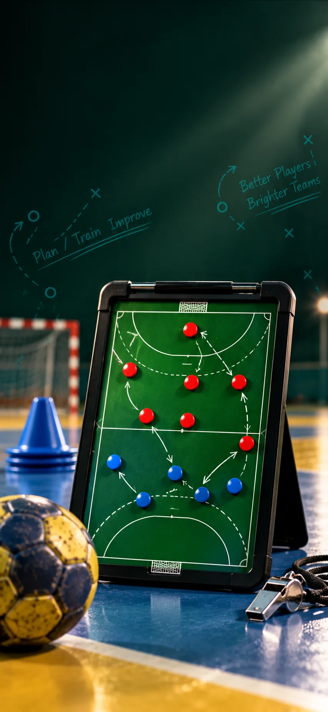
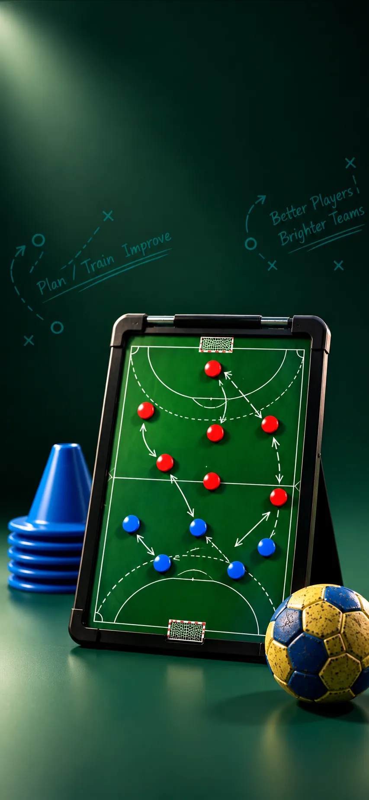
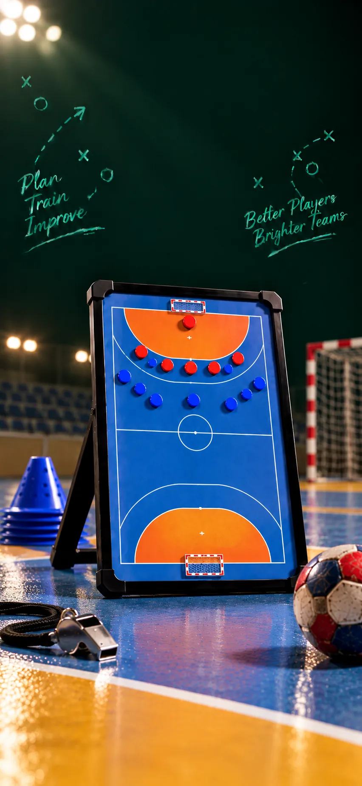
handball_1.png 1080x2340 Premium 3D product render for a mobile app onboarding screen. Vertical 9:19.5 composition (1080x2340). A coach's magnetic tactics board is the subject — black rounded frame, folding hinged corners, slightly glossy surface — standing LEVEL on flat ground — its whole bottom edge resting on the floor, parallel to the floor, not tilted sideways, not floating and not sunk in — leaning back only slightly on its kickstand, turned at a gentle three-quarter angle, lit by one soft key light from the upper left with a cool rim light down its right edge. The board face is painted blue court flooring with orange goal areas — the real colour of that sport's playing surface, not a generic green chalkboard. On it: a handball court seen vertically, with both 6-metre and 9-metre arcs and both goals, drawn in clean thin SOLID white lines — every court line solid, no dashed or dotted court markings — with six BLUE magnetic discs attacking the far goal — two wings in the corners, two backs and a centre back around the 9-metre arc, a pivot on the 6-metre line — six RED discs in a flat 6-0 along the far 6-metre arc and a red goalkeeper in the far goal. NO arrows, lines, arcs or trails of any kind on the board — only the magnets. Close, slightly low camera angle. The board is the clear hero, standing on its own kickstand and filling the middle of the frame. The ground is a blue and yellow resin indoor court. a small three-panel handball ball rests on the ground in front of the board and to the left, close to camera and softly out of focus. a stack of blue training cones sits behind the board on the left. a chrome coach’s whistle on a black lanyard lies on the ground to the right of the board. Soft diagonal light rays fall across the backdrop from the upper right. Even in this low light the board face stays clearly blue court flooring with orange goal areas, fully lit and readable — not a dark or black chalkboard. Colour: deep desaturated forest green throughout, falling to near-black in the corners, with a soft vignette. The only saturated colours in the frame are the red and blue magnetic discs, the props described above and the board face in its own court colour; everything else is muted green and charcoal. Mint-teal (#18C7BC) chalk doodles float faintly on the background — small hand-drawn X and O marks, curved dashed arrows, and two handwritten cursive lines reading "Plan / Train / Improve" and "Better Players / Brighter Teams" with an underline flourish, all in low-opacity mint chalk, clearly decorative and set back behind the objects. COMPOSITION RULE (most important): the top 40% of the frame must stay empty, dark and uncluttered — only the faint chalk doodles and the background gradient live up there. The board and every prop sit entirely in the lower 60% of the frame. Nothing crosses into the top edge. Render: cinematic shallow depth of field, subtle film grain, soft contact shadows, 3D render and product photography hybrid, ultra clean, high detail, no clutter. Do NOT include: any headline text, numbers, captions, UI elements, buttons, phone frames, device mockups, bezels, logos, watermarks, brand names, people or hands. The only text anywhere in the image is the decorative mint chalk handwriting described above.
handball_2.png 1080x2340 Premium 3D product render for a mobile app onboarding screen. Vertical 9:19.5 composition (1080x2340). A coach's magnetic tactics board is the subject — black rounded frame, folding hinged corners, slightly glossy surface — standing LEVEL on flat ground — its whole bottom edge resting on the floor, parallel to the floor, not tilted sideways, not floating and not sunk in — leaning back only slightly on its kickstand, turned at a gentle three-quarter angle, lit by one soft key light from the upper left with a cool rim light down its right edge. The board face is painted blue court flooring with orange goal areas — the real colour of that sport's playing surface, not a generic green chalkboard. On it: a handball court seen vertically, with both 6-metre and 9-metre arcs and both goals, drawn in clean thin SOLID white lines — every court line solid, no dashed or dotted court markings — with six BLUE magnetic discs attacking the far goal — two wings in the corners, two backs and a centre back around the 9-metre arc, a pivot on the 6-metre line — six RED discs in a flat 6-0 along the far 6-metre arc and a red goalkeeper in the far goal. NO arrows, lines, arcs or trails of any kind on the board — only the magnets. Studio composition. The ground is a blue and yellow resin indoor court, filling the lower part of the frame as a clean, evenly lit, flat floor with its own real colour and markings, with soft contact shadows under the objects. Above the floor the backdrop is a plain deep-green gradient. The board is centred and tilted back a little, seen slightly from above. a stack of blue training cones sits at the left edge of the board, overlapping it. a small three-panel handball ball rests at the lower right, just touching the board's corner. Graphic, clean and poster-like rather than photographic. Colour: deep desaturated forest green throughout, falling to near-black in the corners, with a soft vignette. The only saturated colours in the frame are the red and blue magnetic discs, the props described above and the board face in its own court colour; everything else is muted green and charcoal. Mint-teal (#18C7BC) chalk doodles float faintly on the background — small hand-drawn X and O marks, curved dashed arrows, and two handwritten cursive lines reading "Plan / Train / Improve" and "Better Players / Brighter Teams" with an underline flourish, all in low-opacity mint chalk, clearly decorative and set back behind the objects. COMPOSITION RULE (most important): the top 40% of the frame must stay empty, dark and uncluttered — only the faint chalk doodles and the background gradient live up there. The board and every prop sit entirely in the lower 60% of the frame. Nothing crosses into the top edge. Render: cinematic shallow depth of field, subtle film grain, soft contact shadows, 3D render and product photography hybrid, ultra clean, high detail, no clutter. Do NOT include: any headline text, numbers, captions, UI elements, buttons, phone frames, device mockups, bezels, logos, watermarks, brand names, people or hands. The only text anywhere in the image is the decorative mint chalk handwriting described above.
handball_3.png 1080x2340 Premium 3D product render for a mobile app onboarding screen. Vertical 9:19.5 composition (1080x2340). A coach's magnetic tactics board is the subject — black rounded frame, folding hinged corners, slightly glossy surface — standing LEVEL on flat ground — its whole bottom edge resting on the floor, parallel to the floor, not tilted sideways, not floating and not sunk in — leaning back only slightly on its kickstand, turned at a gentle three-quarter angle, lit by one soft key light from the upper left with a cool rim light down its right edge. The board face is painted blue court flooring with orange goal areas — the real colour of that sport's playing surface, not a generic green chalkboard. On it: a handball court seen vertically, with both 6-metre and 9-metre arcs and both goals, drawn in clean thin SOLID white lines — every court line solid, no dashed or dotted court markings — with six BLUE magnetic discs attacking the far goal — two wings in the corners, two backs and a centre back around the 9-metre arc, a pivot on the 6-metre line — six RED discs in a flat 6-0 along the far 6-metre arc and a red goalkeeper in the far goal. NO arrows, lines, arcs or trails of any kind on the board — only the magnets. Wide environmental shot taken on the playing surface itself, from a low sideline angle. a blue and yellow resin indoor court fills the lower frame, sharp near the camera and softening into darkness toward the back. A row of stadium floodlights glows far out of focus in the upper left corner as small warm bokeh. The board stands centre-frame on the ground. a chrome coach’s whistle on a black lanyard lies at the lower left. a small three-panel handball ball rests at the lower right. a stack of blue training cones sits further back on the left. Colour: deep desaturated forest green throughout, falling to near-black in the corners, with a soft vignette. The only saturated colours in the frame are the red and blue magnetic discs, the props described above and the board face in its own court colour; everything else is muted green and charcoal. Mint-teal (#18C7BC) chalk doodles float faintly on the background — small hand-drawn X and O marks, curved dashed arrows, and two handwritten cursive lines reading "Plan / Train / Improve" and "Better Players / Brighter Teams" with an underline flourish, all in low-opacity mint chalk, clearly decorative and set back behind the objects. COMPOSITION RULE (most important): the top 40% of the frame must stay empty, dark and uncluttered — only the faint chalk doodles and the background gradient live up there. The board and every prop sit entirely in the lower 60% of the frame. Nothing crosses into the top edge. Render: cinematic shallow depth of field, subtle film grain, soft contact shadows, 3D render and product photography hybrid, ultra clean, high detail, no clutter. Do NOT include: any headline text, numbers, captions, UI elements, buttons, phone frames, device mockups, bezels, logos, watermarks, brand names, people or hands. The only text anywhere in the image is the decorative mint chalk handwriting described above.
水球战术板 waterPolo · WaterPoloBoard/assets/intro/
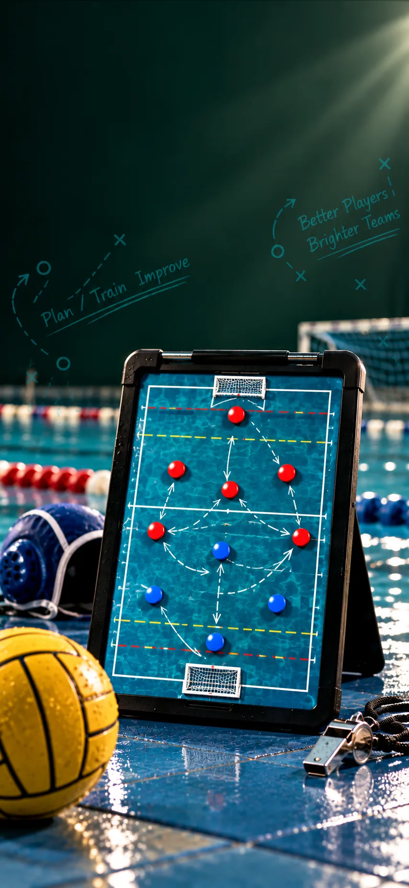
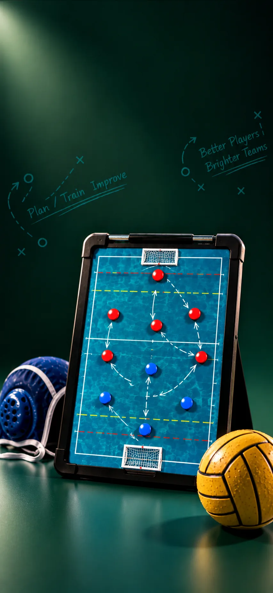
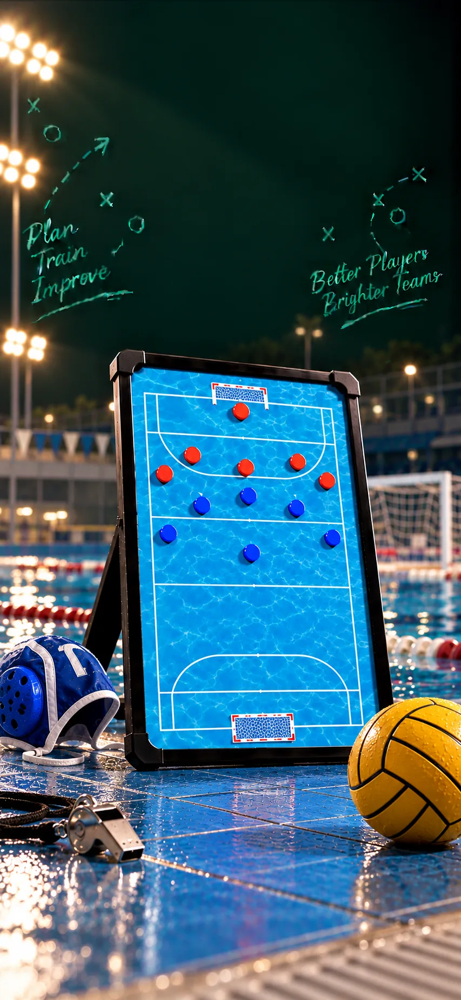
waterPolo_1.png 1080x2340 Premium 3D product render for a mobile app onboarding screen. Vertical 9:19.5 composition (1080x2340). A coach's magnetic tactics board is the subject — black rounded frame, folding hinged corners, slightly glossy surface — standing LEVEL on flat ground — its whole bottom edge resting on the floor, parallel to the floor, not tilted sideways, not floating and not sunk in — leaning back only slightly on its kickstand, turned at a gentle three-quarter angle, lit by one soft key light from the upper left with a cool rim light down its right edge. The board face is painted pool-water blue — the real colour of that sport's playing surface, not a generic green chalkboard. On it: a water polo pool seen vertically, with the 2-metre and 5-metre lines and both goals, drawn in clean thin SOLID white lines — every court line solid, no dashed or dotted court markings — with six BLUE magnetic discs attacking the far goal in a 3-3 umbrella — three along the 5-metre line, two on the wings and a centre forward on the 2-metre line — six RED discs guarding them and a red goalkeeper in the far goal. NO arrows, lines, arcs or trails of any kind on the board — only the magnets. Close, slightly low camera angle. The board is the clear hero, standing on its own kickstand and filling the middle of the frame. The ground is wet blue pool-deck tiles at the water’s edge, with dark water and a floating lane rope behind. a yellow water polo ball rests on the ground in front of the board and to the left, close to camera and softly out of focus. a blue water polo cap with ear guards sits behind the board on the left. a chrome coach’s whistle on a black lanyard lies on the ground to the right of the board. Soft diagonal light rays fall across the backdrop from the upper right. Even in this low light the board face stays clearly pool-water blue, fully lit and readable — not a dark or black chalkboard. Colour: deep desaturated forest green throughout, falling to near-black in the corners, with a soft vignette. The only saturated colours in the frame are the red and blue magnetic discs, the props described above and the board face in its own court colour; everything else is muted green and charcoal. Mint-teal (#18C7BC) chalk doodles float faintly on the background — small hand-drawn X and O marks, curved dashed arrows, and two handwritten cursive lines reading "Plan / Train / Improve" and "Better Players / Brighter Teams" with an underline flourish, all in low-opacity mint chalk, clearly decorative and set back behind the objects. COMPOSITION RULE (most important): the top 40% of the frame must stay empty, dark and uncluttered — only the faint chalk doodles and the background gradient live up there. The board and every prop sit entirely in the lower 60% of the frame. Nothing crosses into the top edge. Render: cinematic shallow depth of field, subtle film grain, soft contact shadows, 3D render and product photography hybrid, ultra clean, high detail, no clutter. Do NOT include: any headline text, numbers, captions, UI elements, buttons, phone frames, device mockups, bezels, logos, watermarks, brand names, people or hands. The only text anywhere in the image is the decorative mint chalk handwriting described above.
waterPolo_2.png 1080x2340 Premium 3D product render for a mobile app onboarding screen. Vertical 9:19.5 composition (1080x2340). A coach's magnetic tactics board is the subject — black rounded frame, folding hinged corners, slightly glossy surface — standing LEVEL on flat ground — its whole bottom edge resting on the floor, parallel to the floor, not tilted sideways, not floating and not sunk in — leaning back only slightly on its kickstand, turned at a gentle three-quarter angle, lit by one soft key light from the upper left with a cool rim light down its right edge. The board face is painted pool-water blue — the real colour of that sport's playing surface, not a generic green chalkboard. On it: a water polo pool seen vertically, with the 2-metre and 5-metre lines and both goals, drawn in clean thin SOLID white lines — every court line solid, no dashed or dotted court markings — with six BLUE magnetic discs attacking the far goal in a 3-3 umbrella — three along the 5-metre line, two on the wings and a centre forward on the 2-metre line — six RED discs guarding them and a red goalkeeper in the far goal. NO arrows, lines, arcs or trails of any kind on the board — only the magnets. Studio composition. The ground is wet blue pool-deck tiles at the water’s edge, with dark water and a floating lane rope behind, filling the lower part of the frame as a clean, evenly lit, flat floor with its own real colour and markings, with soft contact shadows under the objects. Above the floor the backdrop is a plain deep-green gradient. The board is centred and tilted back a little, seen slightly from above. a blue water polo cap with ear guards sits at the left edge of the board, overlapping it. a yellow water polo ball rests at the lower right, just touching the board's corner. Graphic, clean and poster-like rather than photographic. Colour: deep desaturated forest green throughout, falling to near-black in the corners, with a soft vignette. The only saturated colours in the frame are the red and blue magnetic discs, the props described above and the board face in its own court colour; everything else is muted green and charcoal. Mint-teal (#18C7BC) chalk doodles float faintly on the background — small hand-drawn X and O marks, curved dashed arrows, and two handwritten cursive lines reading "Plan / Train / Improve" and "Better Players / Brighter Teams" with an underline flourish, all in low-opacity mint chalk, clearly decorative and set back behind the objects. COMPOSITION RULE (most important): the top 40% of the frame must stay empty, dark and uncluttered — only the faint chalk doodles and the background gradient live up there. The board and every prop sit entirely in the lower 60% of the frame. Nothing crosses into the top edge. Render: cinematic shallow depth of field, subtle film grain, soft contact shadows, 3D render and product photography hybrid, ultra clean, high detail, no clutter. Do NOT include: any headline text, numbers, captions, UI elements, buttons, phone frames, device mockups, bezels, logos, watermarks, brand names, people or hands. The only text anywhere in the image is the decorative mint chalk handwriting described above.
waterPolo_3.png 1080x2340 Premium 3D product render for a mobile app onboarding screen. Vertical 9:19.5 composition (1080x2340). A coach's magnetic tactics board is the subject — black rounded frame, folding hinged corners, slightly glossy surface — standing LEVEL on flat ground — its whole bottom edge resting on the floor, parallel to the floor, not tilted sideways, not floating and not sunk in — leaning back only slightly on its kickstand, turned at a gentle three-quarter angle, lit by one soft key light from the upper left with a cool rim light down its right edge. The board face is painted pool-water blue — the real colour of that sport's playing surface, not a generic green chalkboard. On it: a water polo pool seen vertically, with the 2-metre and 5-metre lines and both goals, drawn in clean thin SOLID white lines — every court line solid, no dashed or dotted court markings — with six BLUE magnetic discs attacking the far goal in a 3-3 umbrella — three along the 5-metre line, two on the wings and a centre forward on the 2-metre line — six RED discs guarding them and a red goalkeeper in the far goal. NO arrows, lines, arcs or trails of any kind on the board — only the magnets. Wide environmental shot taken on the playing surface itself, from a low sideline angle. wet blue pool-deck tiles at the water’s edge, with dark water and a floating lane rope behind fills the lower frame, sharp near the camera and softening into darkness toward the back. A row of stadium floodlights glows far out of focus in the upper left corner as small warm bokeh. The board stands centre-frame on the ground. a chrome coach’s whistle on a black lanyard lies at the lower left. a yellow water polo ball rests at the lower right. a blue water polo cap with ear guards sits further back on the left. Colour: deep desaturated forest green throughout, falling to near-black in the corners, with a soft vignette. The only saturated colours in the frame are the red and blue magnetic discs, the props described above and the board face in its own court colour; everything else is muted green and charcoal. Mint-teal (#18C7BC) chalk doodles float faintly on the background — small hand-drawn X and O marks, curved dashed arrows, and two handwritten cursive lines reading "Plan / Train / Improve" and "Better Players / Brighter Teams" with an underline flourish, all in low-opacity mint chalk, clearly decorative and set back behind the objects. COMPOSITION RULE (most important): the top 40% of the frame must stay empty, dark and uncluttered — only the faint chalk doodles and the background gradient live up there. The board and every prop sit entirely in the lower 60% of the frame. Nothing crosses into the top edge. Render: cinematic shallow depth of field, subtle film grain, soft contact shadows, 3D render and product photography hybrid, ultra clean, high detail, no clutter. Do NOT include: any headline text, numbers, captions, UI elements, buttons, phone frames, device mockups, bezels, logos, watermarks, brand names, people or hands. The only text anywhere in the image is the decorative mint chalk handwriting described above.
藤球战术板 sepakTakraw · SepakTakrawBoard/assets/intro/
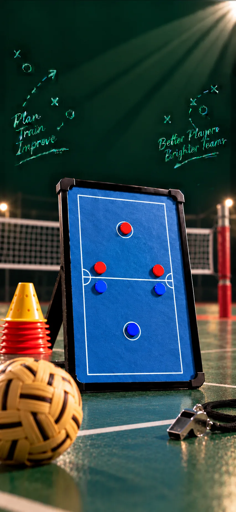
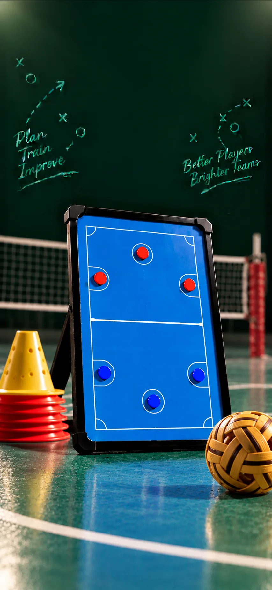
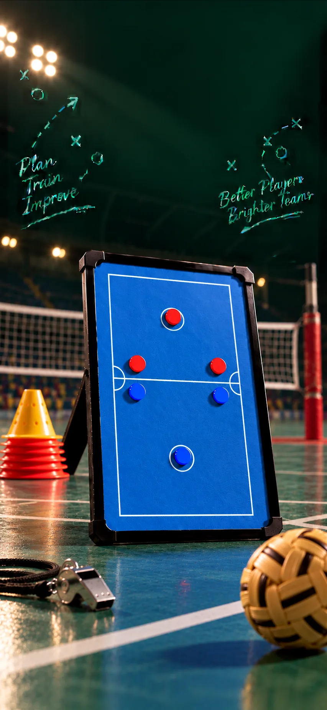
sepakTakraw_1.png 1080x2340 Premium 3D product render for a mobile app onboarding screen. Vertical 9:19.5 composition (1080x2340). A coach's magnetic tactics board is the subject — black rounded frame, folding hinged corners, slightly glossy surface — standing LEVEL on flat ground — its whole bottom edge resting on the floor, parallel to the floor, not tilted sideways, not floating and not sunk in — leaning back only slightly on its kickstand, turned at a gentle three-quarter angle, lit by one soft key light from the upper left with a cool rim light down its right edge. The board face is painted blue court flooring — the real colour of that sport's playing surface, not a generic green chalkboard. On it: a sepak takraw court seen vertically, with the net line and both service circles, drawn in clean thin SOLID white lines — every court line solid, no dashed or dotted court markings — with EXACTLY six glossy magnetic discs: three BLUE in the near court — the server (tekong) in the centre service circle and the two inside players at the quarter circles — and three RED in the same shape in the far court. NO arrows, lines, arcs or trails of any kind on the board — only the magnets. Close, slightly low camera angle. The board is the clear hero, standing on its own kickstand and filling the middle of the frame. The ground is a dark green synthetic indoor court. a woven rattan takraw ball rests on the ground in front of the board and to the left, close to camera and softly out of focus. a stack of red and yellow training cones sits behind the board on the left. a chrome coach’s whistle on a black lanyard lies on the ground to the right of the board. Soft diagonal light rays fall across the backdrop from the upper right. Even in this low light the board face stays clearly blue court flooring, fully lit and readable — not a dark or black chalkboard. Colour: deep desaturated forest green throughout, falling to near-black in the corners, with a soft vignette. The only saturated colours in the frame are the red and blue magnetic discs, the props described above and the board face in its own court colour; everything else is muted green and charcoal. Mint-teal (#18C7BC) chalk doodles float faintly on the background — small hand-drawn X and O marks, curved dashed arrows, and two handwritten cursive lines reading "Plan / Train / Improve" and "Better Players / Brighter Teams" with an underline flourish, all in low-opacity mint chalk, clearly decorative and set back behind the objects. COMPOSITION RULE (most important): the top 40% of the frame must stay empty, dark and uncluttered — only the faint chalk doodles and the background gradient live up there. The board and every prop sit entirely in the lower 60% of the frame. Nothing crosses into the top edge. Render: cinematic shallow depth of field, subtle film grain, soft contact shadows, 3D render and product photography hybrid, ultra clean, high detail, no clutter. Do NOT include: any headline text, numbers, captions, UI elements, buttons, phone frames, device mockups, bezels, logos, watermarks, brand names, people or hands. The only text anywhere in the image is the decorative mint chalk handwriting described above.
sepakTakraw_2.png 1080x2340 Premium 3D product render for a mobile app onboarding screen. Vertical 9:19.5 composition (1080x2340). A coach's magnetic tactics board is the subject — black rounded frame, folding hinged corners, slightly glossy surface — standing LEVEL on flat ground — its whole bottom edge resting on the floor, parallel to the floor, not tilted sideways, not floating and not sunk in — leaning back only slightly on its kickstand, turned at a gentle three-quarter angle, lit by one soft key light from the upper left with a cool rim light down its right edge. The board face is painted blue court flooring — the real colour of that sport's playing surface, not a generic green chalkboard. On it: a sepak takraw court seen vertically, with the net line and both service circles, drawn in clean thin SOLID white lines — every court line solid, no dashed or dotted court markings — with EXACTLY six glossy magnetic discs: three BLUE in the near court — the server (tekong) in the centre service circle and the two inside players at the quarter circles — and three RED in the same shape in the far court. NO arrows, lines, arcs or trails of any kind on the board — only the magnets. Studio composition. The ground is a dark green synthetic indoor court, filling the lower part of the frame as a clean, evenly lit, flat floor with its own real colour and markings, with soft contact shadows under the objects. Above the floor the backdrop is a plain deep-green gradient. The board is centred and tilted back a little, seen slightly from above. a stack of red and yellow training cones sits at the left edge of the board, overlapping it. a woven rattan takraw ball rests at the lower right, just touching the board's corner. Graphic, clean and poster-like rather than photographic. Colour: deep desaturated forest green throughout, falling to near-black in the corners, with a soft vignette. The only saturated colours in the frame are the red and blue magnetic discs, the props described above and the board face in its own court colour; everything else is muted green and charcoal. Mint-teal (#18C7BC) chalk doodles float faintly on the background — small hand-drawn X and O marks, curved dashed arrows, and two handwritten cursive lines reading "Plan / Train / Improve" and "Better Players / Brighter Teams" with an underline flourish, all in low-opacity mint chalk, clearly decorative and set back behind the objects. COMPOSITION RULE (most important): the top 40% of the frame must stay empty, dark and uncluttered — only the faint chalk doodles and the background gradient live up there. The board and every prop sit entirely in the lower 60% of the frame. Nothing crosses into the top edge. Render: cinematic shallow depth of field, subtle film grain, soft contact shadows, 3D render and product photography hybrid, ultra clean, high detail, no clutter. Do NOT include: any headline text, numbers, captions, UI elements, buttons, phone frames, device mockups, bezels, logos, watermarks, brand names, people or hands. The only text anywhere in the image is the decorative mint chalk handwriting described above.
sepakTakraw_3.png 1080x2340 Premium 3D product render for a mobile app onboarding screen. Vertical 9:19.5 composition (1080x2340). A coach's magnetic tactics board is the subject — black rounded frame, folding hinged corners, slightly glossy surface — standing LEVEL on flat ground — its whole bottom edge resting on the floor, parallel to the floor, not tilted sideways, not floating and not sunk in — leaning back only slightly on its kickstand, turned at a gentle three-quarter angle, lit by one soft key light from the upper left with a cool rim light down its right edge. The board face is painted blue court flooring — the real colour of that sport's playing surface, not a generic green chalkboard. On it: a sepak takraw court seen vertically, with the net line and both service circles, drawn in clean thin SOLID white lines — every court line solid, no dashed or dotted court markings — with EXACTLY six glossy magnetic discs: three BLUE in the near court — the server (tekong) in the centre service circle and the two inside players at the quarter circles — and three RED in the same shape in the far court. NO arrows, lines, arcs or trails of any kind on the board — only the magnets. Wide environmental shot taken on the playing surface itself, from a low sideline angle. a dark green synthetic indoor court fills the lower frame, sharp near the camera and softening into darkness toward the back. A row of stadium floodlights glows far out of focus in the upper left corner as small warm bokeh. The board stands centre-frame on the ground. a chrome coach’s whistle on a black lanyard lies at the lower left. a woven rattan takraw ball rests at the lower right. a stack of red and yellow training cones sits further back on the left. Colour: deep desaturated forest green throughout, falling to near-black in the corners, with a soft vignette. The only saturated colours in the frame are the red and blue magnetic discs, the props described above and the board face in its own court colour; everything else is muted green and charcoal. Mint-teal (#18C7BC) chalk doodles float faintly on the background — small hand-drawn X and O marks, curved dashed arrows, and two handwritten cursive lines reading "Plan / Train / Improve" and "Better Players / Brighter Teams" with an underline flourish, all in low-opacity mint chalk, clearly decorative and set back behind the objects. COMPOSITION RULE (most important): the top 40% of the frame must stay empty, dark and uncluttered — only the faint chalk doodles and the background gradient live up there. The board and every prop sit entirely in the lower 60% of the frame. Nothing crosses into the top edge. Render: cinematic shallow depth of field, subtle film grain, soft contact shadows, 3D render and product photography hybrid, ultra clean, high detail, no clutter. Do NOT include: any headline text, numbers, captions, UI elements, buttons, phone frames, device mockups, bezels, logos, watermarks, brand names, people or hands. The only text anywhere in the image is the decorative mint chalk handwriting described above.
沙滩网球战术板 beachTennis · BeachTennisBoard/assets/intro/
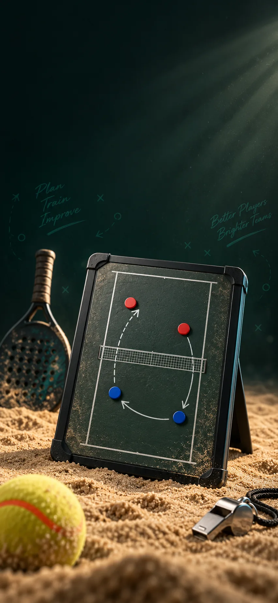
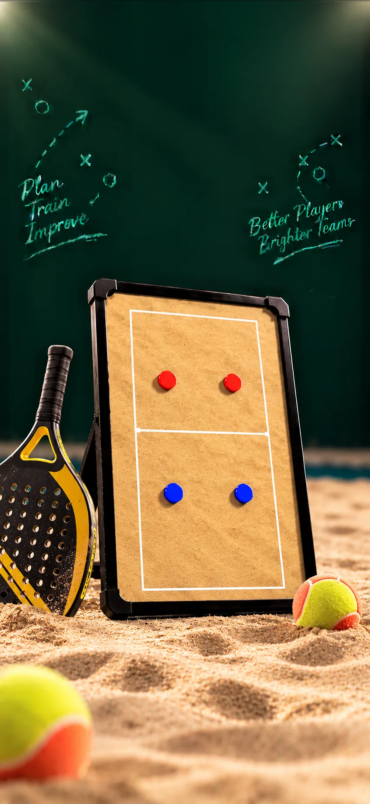
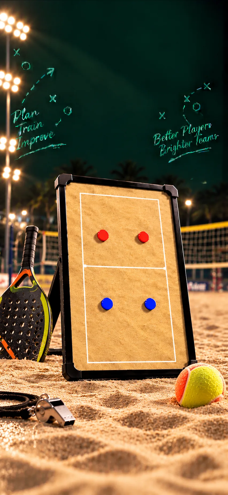
beachTennis_1.png 1080x2340 Premium 3D product render for a mobile app onboarding screen. Vertical 9:19.5 composition (1080x2340). A coach's magnetic tactics board is the subject — black rounded frame, folding hinged corners, slightly glossy surface — standing LEVEL on flat ground — its whole bottom edge resting on the floor, parallel to the floor, not tilted sideways, not floating and not sunk in — leaning back only slightly on its kickstand, turned at a gentle three-quarter angle, lit by one soft key light from the upper left with a cool rim light down its right edge. The board face is painted golden sand — the real colour of that sport's playing surface, not a generic green chalkboard. On it: a beach tennis court seen vertically, with the net line and the sidelines, drawn in clean thin SOLID white lines — every court line solid, no dashed or dotted court markings — with EXACTLY four glossy magnetic discs: two BLUE side by side close to the net in the near court, two RED side by side close to the net in the far court. NO arrows, lines, arcs or trails of any kind on the board — only the magnets. Close, slightly low camera angle. The board is the clear hero, standing on its own kickstand and filling the middle of the frame. The ground is fine golden beach sand, raked flat with a few footprints. a yellow depressurised beach tennis ball half-buried in the sand rests on the ground in front of the board and to the left, close to camera and softly out of focus. a beach tennis paddle standing upright in the sand sits behind the board on the left. a chrome coach’s whistle on a black lanyard lies on the ground to the right of the board. Soft diagonal light rays fall across the backdrop from the upper right. Even in this low light the board face stays clearly golden sand, fully lit and readable — not a dark or black chalkboard. Colour: deep desaturated forest green throughout, falling to near-black in the corners, with a soft vignette. The only saturated colours in the frame are the red and blue magnetic discs, the props described above and the board face in its own court colour; everything else is muted green and charcoal. Mint-teal (#18C7BC) chalk doodles float faintly on the background — small hand-drawn X and O marks, curved dashed arrows, and two handwritten cursive lines reading "Plan / Train / Improve" and "Better Players / Brighter Teams" with an underline flourish, all in low-opacity mint chalk, clearly decorative and set back behind the objects. COMPOSITION RULE (most important): the top 40% of the frame must stay empty, dark and uncluttered — only the faint chalk doodles and the background gradient live up there. The board and every prop sit entirely in the lower 60% of the frame. Nothing crosses into the top edge. Render: cinematic shallow depth of field, subtle film grain, soft contact shadows, 3D render and product photography hybrid, ultra clean, high detail, no clutter. Do NOT include: any headline text, numbers, captions, UI elements, buttons, phone frames, device mockups, bezels, logos, watermarks, brand names, people or hands. The only text anywhere in the image is the decorative mint chalk handwriting described above.
beachTennis_2.png 1080x2340 Premium 3D product render for a mobile app onboarding screen. Vertical 9:19.5 composition (1080x2340). A coach's magnetic tactics board is the subject — black rounded frame, folding hinged corners, slightly glossy surface — standing LEVEL on flat ground — its whole bottom edge resting on the floor, parallel to the floor, not tilted sideways, not floating and not sunk in — leaning back only slightly on its kickstand, turned at a gentle three-quarter angle, lit by one soft key light from the upper left with a cool rim light down its right edge. The board face is painted golden sand — the real colour of that sport's playing surface, not a generic green chalkboard. On it: a beach tennis court seen vertically, with the net line and the sidelines, drawn in clean thin SOLID white lines — every court line solid, no dashed or dotted court markings — with EXACTLY four glossy magnetic discs: two BLUE side by side close to the net in the near court, two RED side by side close to the net in the far court. NO arrows, lines, arcs or trails of any kind on the board — only the magnets. Studio composition. The ground is fine golden beach sand, raked flat with a few footprints, filling the lower part of the frame as a clean, evenly lit, flat floor with its own real colour and markings, with soft contact shadows under the objects. Above the floor the backdrop is a plain deep-green gradient. The board is centred and tilted back a little, seen slightly from above. a beach tennis paddle standing upright in the sand sits at the left edge of the board, overlapping it. a yellow depressurised beach tennis ball half-buried in the sand rests at the lower right, just touching the board's corner. Graphic, clean and poster-like rather than photographic. Colour: deep desaturated forest green throughout, falling to near-black in the corners, with a soft vignette. The only saturated colours in the frame are the red and blue magnetic discs, the props described above and the board face in its own court colour; everything else is muted green and charcoal. Mint-teal (#18C7BC) chalk doodles float faintly on the background — small hand-drawn X and O marks, curved dashed arrows, and two handwritten cursive lines reading "Plan / Train / Improve" and "Better Players / Brighter Teams" with an underline flourish, all in low-opacity mint chalk, clearly decorative and set back behind the objects. COMPOSITION RULE (most important): the top 40% of the frame must stay empty, dark and uncluttered — only the faint chalk doodles and the background gradient live up there. The board and every prop sit entirely in the lower 60% of the frame. Nothing crosses into the top edge. Render: cinematic shallow depth of field, subtle film grain, soft contact shadows, 3D render and product photography hybrid, ultra clean, high detail, no clutter. Do NOT include: any headline text, numbers, captions, UI elements, buttons, phone frames, device mockups, bezels, logos, watermarks, brand names, people or hands. The only text anywhere in the image is the decorative mint chalk handwriting described above.
beachTennis_3.png 1080x2340 Premium 3D product render for a mobile app onboarding screen. Vertical 9:19.5 composition (1080x2340). A coach's magnetic tactics board is the subject — black rounded frame, folding hinged corners, slightly glossy surface — standing LEVEL on flat ground — its whole bottom edge resting on the floor, parallel to the floor, not tilted sideways, not floating and not sunk in — leaning back only slightly on its kickstand, turned at a gentle three-quarter angle, lit by one soft key light from the upper left with a cool rim light down its right edge. The board face is painted golden sand — the real colour of that sport's playing surface, not a generic green chalkboard. On it: a beach tennis court seen vertically, with the net line and the sidelines, drawn in clean thin SOLID white lines — every court line solid, no dashed or dotted court markings — with EXACTLY four glossy magnetic discs: two BLUE side by side close to the net in the near court, two RED side by side close to the net in the far court. NO arrows, lines, arcs or trails of any kind on the board — only the magnets. Wide environmental shot taken on the playing surface itself, from a low sideline angle. fine golden beach sand, raked flat with a few footprints fills the lower frame, sharp near the camera and softening into darkness toward the back. A row of stadium floodlights glows far out of focus in the upper left corner as small warm bokeh. The board stands centre-frame on the ground. a chrome coach’s whistle on a black lanyard lies at the lower left. a yellow depressurised beach tennis ball half-buried in the sand rests at the lower right. a beach tennis paddle standing upright in the sand sits further back on the left. Colour: deep desaturated forest green throughout, falling to near-black in the corners, with a soft vignette. The only saturated colours in the frame are the red and blue magnetic discs, the props described above and the board face in its own court colour; everything else is muted green and charcoal. Mint-teal (#18C7BC) chalk doodles float faintly on the background — small hand-drawn X and O marks, curved dashed arrows, and two handwritten cursive lines reading "Plan / Train / Improve" and "Better Players / Brighter Teams" with an underline flourish, all in low-opacity mint chalk, clearly decorative and set back behind the objects. COMPOSITION RULE (most important): the top 40% of the frame must stay empty, dark and uncluttered — only the faint chalk doodles and the background gradient live up there. The board and every prop sit entirely in the lower 60% of the frame. Nothing crosses into the top edge. Render: cinematic shallow depth of field, subtle film grain, soft contact shadows, 3D render and product photography hybrid, ultra clean, high detail, no clutter. Do NOT include: any headline text, numbers, captions, UI elements, buttons, phone frames, device mockups, bezels, logos, watermarks, brand names, people or hands. The only text anywhere in the image is the decorative mint chalk handwriting described above.
足排球战术板 footvolley · FootvolleyBoard/assets/intro/
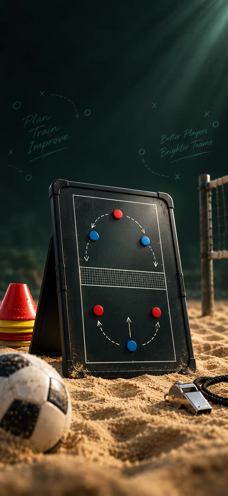
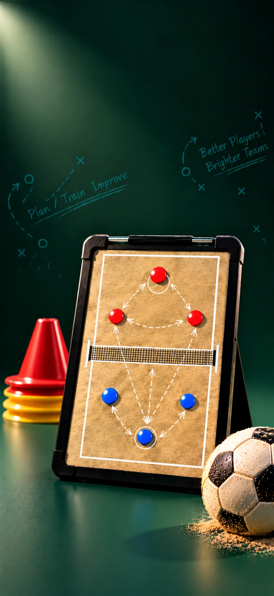
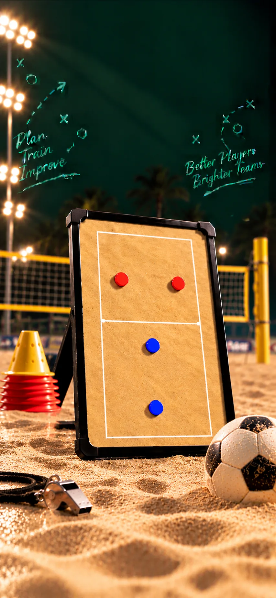
footvolley_1.png 1080x2340 Premium 3D product render for a mobile app onboarding screen. Vertical 9:19.5 composition (1080x2340). A coach's magnetic tactics board is the subject — black rounded frame, folding hinged corners, slightly glossy surface — standing LEVEL on flat ground — its whole bottom edge resting on the floor, parallel to the floor, not tilted sideways, not floating and not sunk in — leaning back only slightly on its kickstand, turned at a gentle three-quarter angle, lit by one soft key light from the upper left with a cool rim light down its right edge. The board face is painted golden sand — the real colour of that sport's playing surface, not a generic green chalkboard. On it: a footvolley court seen vertically, with the net line and the sidelines, drawn in clean thin SOLID white lines — every court line solid, no dashed or dotted court markings — with EXACTLY four glossy magnetic discs: two BLUE in the near court, one close to the net and one deep, and two RED in the same shape in the far court. NO arrows, lines, arcs or trails of any kind on the board — only the magnets. Close, slightly low camera angle. The board is the clear hero, standing on its own kickstand and filling the middle of the frame. The ground is fine golden beach sand with footprints, a net post at the edge of frame. a classic black-and-white football half-buried in the sand rests on the ground in front of the board and to the left, close to camera and softly out of focus. a stack of red and yellow training cones sits behind the board on the left. a chrome coach’s whistle on a black lanyard lies on the ground to the right of the board. Soft diagonal light rays fall across the backdrop from the upper right. Even in this low light the board face stays clearly golden sand, fully lit and readable — not a dark or black chalkboard. Colour: deep desaturated forest green throughout, falling to near-black in the corners, with a soft vignette. The only saturated colours in the frame are the red and blue magnetic discs, the props described above and the board face in its own court colour; everything else is muted green and charcoal. Mint-teal (#18C7BC) chalk doodles float faintly on the background — small hand-drawn X and O marks, curved dashed arrows, and two handwritten cursive lines reading "Plan / Train / Improve" and "Better Players / Brighter Teams" with an underline flourish, all in low-opacity mint chalk, clearly decorative and set back behind the objects. COMPOSITION RULE (most important): the top 40% of the frame must stay empty, dark and uncluttered — only the faint chalk doodles and the background gradient live up there. The board and every prop sit entirely in the lower 60% of the frame. Nothing crosses into the top edge. Render: cinematic shallow depth of field, subtle film grain, soft contact shadows, 3D render and product photography hybrid, ultra clean, high detail, no clutter. Do NOT include: any headline text, numbers, captions, UI elements, buttons, phone frames, device mockups, bezels, logos, watermarks, brand names, people or hands. The only text anywhere in the image is the decorative mint chalk handwriting described above.
footvolley_2.png 1080x2340 Premium 3D product render for a mobile app onboarding screen. Vertical 9:19.5 composition (1080x2340). A coach's magnetic tactics board is the subject — black rounded frame, folding hinged corners, slightly glossy surface — standing LEVEL on flat ground — its whole bottom edge resting on the floor, parallel to the floor, not tilted sideways, not floating and not sunk in — leaning back only slightly on its kickstand, turned at a gentle three-quarter angle, lit by one soft key light from the upper left with a cool rim light down its right edge. The board face is painted golden sand — the real colour of that sport's playing surface, not a generic green chalkboard. On it: a footvolley court seen vertically, with the net line and the sidelines, drawn in clean thin SOLID white lines — every court line solid, no dashed or dotted court markings — with EXACTLY four glossy magnetic discs: two BLUE in the near court, one close to the net and one deep, and two RED in the same shape in the far court. NO arrows, lines, arcs or trails of any kind on the board — only the magnets. Studio composition. The ground is fine golden beach sand with footprints, a net post at the edge of frame, filling the lower part of the frame as a clean, evenly lit, flat floor with its own real colour and markings, with soft contact shadows under the objects. Above the floor the backdrop is a plain deep-green gradient. The board is centred and tilted back a little, seen slightly from above. a stack of red and yellow training cones sits at the left edge of the board, overlapping it. a classic black-and-white football half-buried in the sand rests at the lower right, just touching the board's corner. Graphic, clean and poster-like rather than photographic. Colour: deep desaturated forest green throughout, falling to near-black in the corners, with a soft vignette. The only saturated colours in the frame are the red and blue magnetic discs, the props described above and the board face in its own court colour; everything else is muted green and charcoal. Mint-teal (#18C7BC) chalk doodles float faintly on the background — small hand-drawn X and O marks, curved dashed arrows, and two handwritten cursive lines reading "Plan / Train / Improve" and "Better Players / Brighter Teams" with an underline flourish, all in low-opacity mint chalk, clearly decorative and set back behind the objects. COMPOSITION RULE (most important): the top 40% of the frame must stay empty, dark and uncluttered — only the faint chalk doodles and the background gradient live up there. The board and every prop sit entirely in the lower 60% of the frame. Nothing crosses into the top edge. Render: cinematic shallow depth of field, subtle film grain, soft contact shadows, 3D render and product photography hybrid, ultra clean, high detail, no clutter. Do NOT include: any headline text, numbers, captions, UI elements, buttons, phone frames, device mockups, bezels, logos, watermarks, brand names, people or hands. The only text anywhere in the image is the decorative mint chalk handwriting described above.
footvolley_3.png 1080x2340 Premium 3D product render for a mobile app onboarding screen. Vertical 9:19.5 composition (1080x2340). A coach's magnetic tactics board is the subject — black rounded frame, folding hinged corners, slightly glossy surface — standing LEVEL on flat ground — its whole bottom edge resting on the floor, parallel to the floor, not tilted sideways, not floating and not sunk in — leaning back only slightly on its kickstand, turned at a gentle three-quarter angle, lit by one soft key light from the upper left with a cool rim light down its right edge. The board face is painted golden sand — the real colour of that sport's playing surface, not a generic green chalkboard. On it: a footvolley court seen vertically, with the net line and the sidelines, drawn in clean thin SOLID white lines — every court line solid, no dashed or dotted court markings — with EXACTLY four glossy magnetic discs: two BLUE in the near court, one close to the net and one deep, and two RED in the same shape in the far court. NO arrows, lines, arcs or trails of any kind on the board — only the magnets. Wide environmental shot taken on the playing surface itself, from a low sideline angle. fine golden beach sand with footprints, a net post at the edge of frame fills the lower frame, sharp near the camera and softening into darkness toward the back. A row of stadium floodlights glows far out of focus in the upper left corner as small warm bokeh. The board stands centre-frame on the ground. a chrome coach’s whistle on a black lanyard lies at the lower left. a classic black-and-white football half-buried in the sand rests at the lower right. a stack of red and yellow training cones sits further back on the left. Colour: deep desaturated forest green throughout, falling to near-black in the corners, with a soft vignette. The only saturated colours in the frame are the red and blue magnetic discs, the props described above and the board face in its own court colour; everything else is muted green and charcoal. Mint-teal (#18C7BC) chalk doodles float faintly on the background — small hand-drawn X and O marks, curved dashed arrows, and two handwritten cursive lines reading "Plan / Train / Improve" and "Better Players / Brighter Teams" with an underline flourish, all in low-opacity mint chalk, clearly decorative and set back behind the objects. COMPOSITION RULE (most important): the top 40% of the frame must stay empty, dark and uncluttered — only the faint chalk doodles and the background gradient live up there. The board and every prop sit entirely in the lower 60% of the frame. Nothing crosses into the top edge. Render: cinematic shallow depth of field, subtle film grain, soft contact shadows, 3D render and product photography hybrid, ultra clean, high detail, no clutter. Do NOT include: any headline text, numbers, captions, UI elements, buttons, phone frames, device mockups, bezels, logos, watermarks, brand names, people or hands. The only text anywhere in the image is the decorative mint chalk handwriting described above.